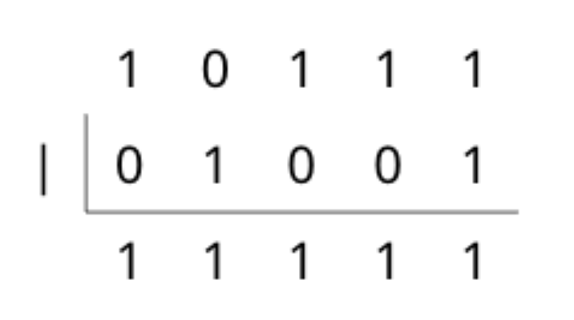
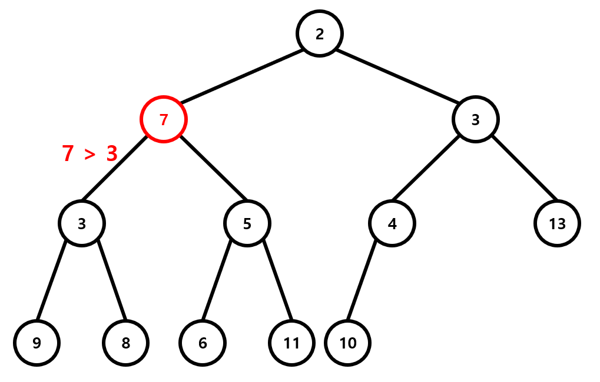
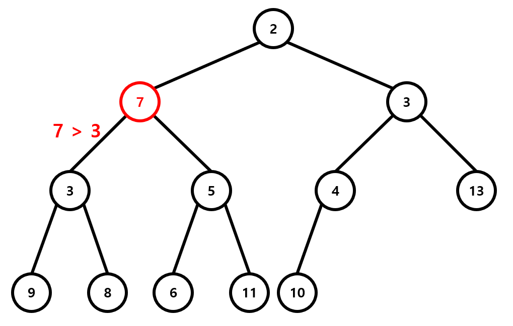

_
안녕하세요. IamCoder(나는코더다) 위키입니다.
1. 소개
2. 알고리즘
- Sort
- Graph Traversal
- Divide & Conquer
- Dynamic Programming
- Shortest Path
- Query Technique
- DP Optimization
- Network Flow
- Geometry
- String
3. 자료구조
4. 기타
5. Problem Solving
_
1. 소개
2. 알고리즘
- Sort
- Graph Traversal
- Divide & Conquer
- Dynamic Programming
- Shortest Path
- Query Technique
- DP Optimization
- Network Flow
- Geometry
- String
3. 자료구조
4. 기타
5. Problem Solving
_
이 사이트는 정보과학을 공부하고, 알고리즘을 공부하는 학생들을 위해 만든 사이트입니다.
-
기본적으로 이 사이트는 사용자가 읽고, 수정하기 쉽도록 하기 위해 위키 구조를 갖고 있습니다.
-
정보과학을 공부하는 사람은 누구나 사이트를 통해서 도움을 받고 공부를 할 수 있지만, 사이트의 수정 권한은 IamCoder 부원들에게 있습니다.
-
사이트의 내용은 원래 책을 쓰기 위해 만들어졌기 때문에 선형으로 되어 있었으나 위키 형태로 만드는 과정에서 상위/하위 문서를 갖는 트리가 되었습니다. 트리의 루트는 Tutorial입니다.
_
경기과학고등학교 정보과학 동아리 IamCoder입니다.
_
1. 규칙
- 문서는 보통 소개 -> 내용 (코드, 하위 내용) -> 예시(관련 문제, 해답) -> 관련 문서 (없으면 생략) -> 여담(팁, 응용, 등 / 없으면 생략) 순으로 진행된다.
- 관련된 상위 문서 / 하위 문서와 연결하여 문서를 추가한다.
- 어떤 문제에 대한 해답을 적을 때, __대부분__의 경우(매우 쉬운 문제 제외) 답안 코드를 적지 않고 답의 아이디어나 코딩 팁 정도만 적는다.
2. Markdown
-
이런 사이트에서 기본적인 정보를 얻을 수 있음
-
페이지의 가장 첫 제목은
#으로 표현하고 하위 제목들은#의 개수 2개, 3개, ... , 6개 순으로 늘리면 됨- 넘버링은 알아서 해주니
#개수로 하위 제목 표현만 해주면 됨
ex)
### hello #### hello? #### world? ### world2.1. hello
2.1.1. hello?
2.1.2. world?
2.2. world
- 넘버링은 알아서 해주니
-
어떤 __수식__을 문장 내부에 넣고 싶으면
\\(수식\\)형태로 latex에 사용하던 수식들을$ $대신\\(랑\\)로 감싸면 됨- 한줄 전체에 수식을 넣는 경우
$$ comment $$로 처리 가능
ex)
\\( N \leq 10 \\)\( N \leq 10 \)
- 한줄 전체에 수식을 넣는 경우
-
__코드__는
``` c++로 시작해서 한줄 띄우고 코드 작성 후```를 마지막 줄에 넣으면 됨ex)
``` c++ #include <stdio.h> int main(){ printf("hello world"); return 0; } ```#include <stdio.h> int main(){ printf("hello world"); return 0; } -
__인용 표현__은 첫줄과 마지막 줄에
>를 쓰면 되고, 인용 내부에서 또 인용은>의 개수를 2개, 3개 순으로 늘리면 됨. 문제 적을때 인용 표현 내부에 문제, 입력, 출력 순으로 적으면 됨 (bitmask 문서 마지막 예제 부분 참고)ex)
> hello world >hello world
-
html은 그냥 넣으면 들어간다고 함... 그래서 javascript로 애니메이션을 넣거나 할수 있다고 함...
- youtube embedding 가능
- 주석을 처리 가능
<!-- comment -->
_
1. Sort(정렬)이란?
프로그래밍에서 정렬이란 무작위로 있는 여러 자료들의 순서를 규칙성 있게 재배열하는 것을 뜻한다. 오름차순, 또는 내림차순으로 정렬하는 것이 일반적이나, 내가 임의로 정한 규칙에 따라 정렬해야 하는 경우도 있다. 정렬해야 하는 자료들의 개수가 n일 때, 정렬알고리즘은 크게 시간복잡도가 \(O(n^2)\), \(O(n\log n)\)과 그 이외인 것으로 나뉘는데, 초급단계에서는 이 \(O(n^2)\) 방법만 알아도 큰 무리는 없다. 구현이 5에서 6줄 정도로 매우 짧고 개념도 직관적으로 이해가 쉽기 때문이다. 그러나 중급단계 이상에서는 100000개 이상의 자료들을 정렬해야 하는 경우가 생겨 \(O(n^2)\)방법으로는 시간초과가 나게 된다. 따라서 \(O(nlogn)\)정렬을 기용해야 하는데, 구현이 모두 \(20\)줄 이상으로 생각보다 쉽지만은 않다. 그러나 우리에게는 하나의 무기가 있는데, 그게 뭔지는 차차 알아가 보도록 하자. 이제부터 설명을 시작할 건데, 이하의 예시코드는 다음의 함수 sortarr() 안에 들어갈 코드로 하자. n개의 int형 자료를 오름차순으로 정렬하여 순서대로 출력하는 프로그램을 다음과 같이 구현하자.
#include <bits/stdc++.h>
using namespace std;
int arr[100010], n;
int main()
{
scanf("%d", &n);
for(int i=1; i<=n; i++)
scanf("%d", &arr[i]);
sortarr(); //여기
for(int i=1; i<=n; i++)
printf("%d ", arr[i]);
}
2. \( O(n^2) \) Sort
2.1. 종류
2.2. 여담
이로써 기본적인 정렬 알고리즘들을 살펴보았는데, 이 알고리즘들은 정렬할 때 쓰일 뿐만 아니라 문제에도 활용이 되는 기본 중의 기본으로 꼭 익혀둬야 한다. 앞으로의 \(O(n\log n)\) 알고리즘들은 더욱 심화된 자료구조와 기법을 사용하므로 모르는 자료구조가 있으면 같은 책의 앞 또는 뒤에 설명이 있으므로 참고하면 되고, 인터넷에서도 설명이 친절하게 되어 있으니 참고하길 바란다.
3. \(O(n\log n)\) Sort
3.1. 종류
4. 기타 정렬
4.1. 종류
5. 여담
_
1. 소개
\(O(n^2)\)정렬 중에서 구현이 제일 쉽고 유명한 방법이다. 인접한 두개의 항의 대소를 비교하여 작은 것을 앞으로 보내는 방법이다. 이 방법의 정당성은 이해하기 쉽다. (1, 2), (2, 3), … ,(n-1, n) 번을 순차적으로 비교했을 때, 다른 것은 모르지만 n번째 원소의 값이 최대라는 것은 확신할 수 있다. 이를 n번 반복하여 뒤에서부터 올바르게 숫자를 채워나간다면 정렬이 완료될 것이다. 이를 for문 두개를 이용하여 구현할 수 있고, 총 연산이 \(n*(n-1)/2\)번 실행되므로 시간복잡도는 \(O(n^2)\)이다.
2. 코드
void sortarr()
{
for(int i=1; i<n; i++)
for(int j=1; j<=n-i; j++)
if(arr[j]>arr[j+1])
swap(arr[j], arr[j+1]);
}
_
1. 소개
오히려 삽입정렬보다 개념을 이해하기는 더 쉬울지도 모르겠다. 1번 원소부터 n개의 원소를 다 둘러보면서 최솟값을 찾은 뒤, 그 값을 원래 1번원소와 바꾸고, 2번 원소부터 n번원소까지 이를 반복하는 것이다. 긴말없이 코드로 보여주도록 하겠다.
2. 코드
void sortarr()
{
int minnum;
for(int i=1; i<n; i++){
minnum=i;
for(int j=i+1; j<=n; j++)
if(arr[j]<arr[minnum])
minnum=j;
swap(arr[i], arr[minnum]);
}
}
_
1. 소개
\(O(n^2)\)중에서는 개념적으로는 선택정렬까지는 아니지만 버블정렬보다는 쉽지만, 사실 잘 쓰지 않는 정렬 기법이다. \(1\)번부터 \(n\)번의 단계가 있는데, i번째 단계에서는 1번부터 i-1번째원소까지 모두 정렬되어 있는 상황에서 1번부터 i번까지 정렬한다. \(1\)번부터 i-1번까지 정렬되어 있으니, 그냥 뒤에서부터 훑어보면서 이 숫자가 들어갈 곳을 찾으면 된다.
2. 코드
void sortarr()
{
for(int i=1; i<=n; i++){
int key=arr[i];
for(int j=i-1; j>=1; j--){
if(key>arr[j]){
arr[j+1]=key;
break;
}
swap(arr[j], arr[j+1]);
}
}
}
_
1. 소개
병합정렬은 분할정복, 혹은 Divide & Conquer를 사용한 알고리즘으로, 폰 노이만이 개발했다고 한다. 병합정렬의 아이디어는 어떤 배열을 두 조각으로 자르는 거에서 시작한다. 만약 두 조각으로 자른 것들이 이미 정렬되어 있다고 하면, 두 조각을 합쳐서 원래 배열을 정렬시키는 데에는 \(O(n)\)의 시간복잡도밖에 걸리지 않는다. 어떻게 하느냐면, “3, 6, 8, 9”와 “1, 4, 7, 10”을 합칠 때(병합할 때) 두 배열에 대한 피벗을 각각 잡아 피벗들끼리 비교하여 더 작은 것부터 원래 배열에 담는 것이다. 즉 이 경우 3과 1, 3과 4, 6과 4, 6과 7, 8과 7, 8과 10, 9와 10을 순서대로 비교하여 새 배열에는 “1, 3, 4, 6, 7, 8, 9, 10”이 들어가게 된다. 그렇다면, 이를 재귀적으로 계속 절반씩 나눠가면서 각 배열의 절반씩을 정렬하면 될 것이다. 그런데, n을 계속 절반으로 쪼개나가는 것이니 재귀탐색은 깊어봤자 \(\log n\)번씩 밖에 실행되지 않을 것이다! 따라서 전체 알고리즘은 \(O(n\log n)\)안에 실행될 것이다. main함수의 arrsort()를 mergesort(1, n)으로 바꾸고 구현한 병합정렬의 코드이다.
2. 코드
void mergesort(int st, int fin)
{
if(st>=fin)return;
int mid=(st+fin)/2;
mergesort(st, mid);
mergesort(mid+1, fin);
int pv1=st, pv2=mid+1, merged[100010], re=st;
while(pv1<=mid||pv2<=fin){
if(pv1>mid)merged[re++]=arr[pv2++];
else if(pv2>fin)merged[re++]=arr[pv1++];
else merged[re++]=arr[pv1]<=arr[pv2]?arr[pv1++]:arr[pv2++];
}
for(int i=st; i<=fin; i++){
arr[i]=merged[i];
}
}
_
1. 소개
우선 힙이라는 자료구조를 안다는 가정하에 설명을 시작하도록 하겠다. 우리는 최소 힙을 이용해 선택정렬의 방법을 최적화할 것이다. 선택정렬에서 어떤 구간의 최솟값을 찾는데 그것을 찾기 위해 n개의 칸을 탐색하던지, 힙을 이용하는지의 차이이다. 힙에서는 원소를 추가하는데 \(\log n\), 삭제하는데 \(\log n\)의 시간복잡도가 필요한 반면, 힙의 최소 혹은 최댓값은 상수시간 안에 구해낼 수 있어 이를 이용해 구현한 힙정렬은 \(O(n\log n)\)의 시간복잡도를 가진다. main함수의 sortarr()을 heapsort()로 바꾼 뒤 작성한 코드이다.
2. 코드
2.1. Heap Sort without priority_queue
void in_heap(int num)
{
heap[++siz]=num;
int temp=siz;
while(temp>1){
if(heap[temp/2]>heap[temp])swap(heap[temp/2], heap[temp]);
else break;
temp/=2;
}
}
void poptop_heap()
{
swap(heap[1], heap[siz]);
heap[siz]=987654321;
siz--;
int temp=1;
while(temp<=siz/2){
if(heap[temp]<=heap[temp*2]&&heap[temp]<=heap[temp*2+1])break;
if(heap[temp*2]<=heap[temp*2+1]){
swap(heap[temp], heap[temp*2]);
temp*=2;
}
else{
swap(heap[temp], heap[temp*2+1]);
temp*=2;
temp++;
}
}
}
void heapsort()
{
for(int i=1; i<=n; i++)
in_heap(arr[i]);
for(int i=1; i<=n; i++){
arr[i]=heap[1];
poptop_heap();
}
}
2.2. Heap Sort using priority_queue
힙이란 자료구조는 이미 우선순위 큐의 형태로 구현되어 있으므로 이를 이용하면 코드가 훨씬 간결해진다. 다만 우선순위 큐는 최대 힙으로 원래 수에 -1을 곱해준 값으로 우선순위 큐 안에 넣어주게 되면 최소 힙처럼 사용할 수 있다.
void heapsort()
{
priority_queue<int> pq;
for(int i=1; i<=n; i++)
pq.push(-arr[i]);
for(int i=1; i<=n; i++){
arr[i]=-pq.top();
pq.pop();
}
}
_
1. 소개
퀵정렬은 다른 알고리즘과는 다르게 시간복잡도가 딱히 정해져 있지 않다. 그 이유는 시간복잡도가 n이 아닌 입력된 배열에 의존하기 때문이다. 퀵정렬은 분할정복을 기본으로 하는데, 어느 하나의 랜덤한 값을 잡아 그보다 작은 값들은 앞으로, 큰 값을 뒤로 몰아놓은 뒤 두 부분을 각각 재귀적으로 정렬해주는 것이다. 시간복잡도는 이때 랜덤하게 잡은 값에 의존하는데, 모든 과정에서 이 랜덤값이 중앙값이면, 시간복잡도는 \(O(nlogn)\)이 되고, 모든 과정에서 랜덤값이 최소이거나 최대이면 시간복잡도가 \(O(n^2)\)이다. 그런데 사실 이럴 일은 매우 드물기 때문에, 안심하고 써도 문제는 없다. main함수의 arrsort()를 quicksort(1, n)으로 바꾸자. 우리는 이 랜덤한 값을 그냥 정렬하는 수들 중 마지막 수로 하자. 실전에서는 이 랜덤한 값을 난수로 처리하거나, 정렬하는 수들중의 중앙값을 이용한다.
2. 코드
void quicksort(int st, int fin)
{
if(st>=fin)return;
int temp[100010], fr=st, re=fin-1;
for(int i=st; i<fin; i++){
if(arr[i]<=arr[fin])temp[fr++]=arr[i];
else temp[re--]=arr[i];
}
for(int i=st; i<fin; i++)
arr[i]=temp[i];
swap(arr[fr], arr[fin]);
quicksort(st, re);
quicksort(fr, fin);
}
_
1. 소개
정렬하는 수들의 크기가 그리 크지 않고, 모두 0이상일 때 쓰는 정렬인데, 다른 정렬들과 달리 메모리가 굉장히 많이 필요하다. 그러나 수들이 전부 많이 작으면 이보다 빠른 정렬은 없을 것이다. 시간복잡도가 무려 \(O(n+max(arr[i]))\)로, 배열값만 적당하다면 선형시간 안에 정렬을 할수 있기 때문이다. 정렬의 이름답게 각 원소의 개수를 배열에 저장해 둔 뒤 그 자료를 이용해 정렬을 하는 것이다. 다만 최댓값이 9백만 정도가 넘어가면 일반적인 문제에서 메모리 초과가 나게 되는 치명적인 단점이 있다.
2. 코드
void sortarr()
{
int cnt[100010];
fill(cnt, cnt+100005, 0);
for(int i=1; i<=n; i++)cnt[arr[i]]++;
int num=0, pv=0;
while(num<n){
if(!cnt[pv])pv++;
else{
arr[++num]=pv;
cnt[pv]--;
}
}
}
_
1. 소개
카운팅 정렬의 약점을 완벽하게 보완해주는 정렬 방법이다. 시간복잡도의 d는 각 원소의 자릿수중 최댓값인데, 각 자리수별로 카운팅 정렬을 실행하여 정렬하여 큰 수에 대해서도 정렬을 시행할 수 있다. 물론 가장 큰 자릿수부터 정렬을 시행해 주어야 할 것이다. 래딕스 정렬은 Big Integer라 불리는 unsigned long long int 범위를 훨씬 벗어나는, \(10^{100}\)과 같은 수들을 정렬할 때 유용하게 쓰일 수 있다. 코드는 카운팅 정렬의 것을 약간만 수정하면 되므로 생략하도록 하겠다.
_
1. 소개
퀵정렬과 힙정렬을 합한 정렬이다. 기본적으로 퀵정렬을 하지만, 어느정도 재귀가 깊어지면 힙정렬을 이용해 퀵정렬에서 나올 수 있는 최악의 시간복잡도를 피해준다.
2. STL sort
하지만 이 인트로 정렬은 구현이 지금까지 나온 모든 정렬보다 쉽다! 왜냐하면, C++에서 이 인트로 정렬을 지원해주기 때문에 딱 한줄이면 정렬이 마무리 된다! 실전에서 가장 유용하게 쓰이는 함수라 봐도 무방하고, 그만큼 빠른 정렬이기에 이 단원을 읽으면서 이거 하나만은 꼭 알고 가자. <algorithm> 헤더파일에 존재하는 sort함수는 sort(시작포인터, 끝포인터, 비교함수의 포인터)의 꼴로 이루어져있는데, 3번째 항을 빈칸으로 남겨둔다면 오름차순 정렬을 시행한다.
2.1. 비교 함수
sort함수의 가장 큰 장점은 int뿐만 아니라 내가 임의로 만든 구조체라던지 pair등의 대소비교가 가능한 모든 자료구조에 대해서 적용이 가능하다는 것이다! 비교함수의 작성법에 대해 아래 코드를 보면서 설명하도록 하겠다.
#include <bits/stdc++.h>
using namespace std;
struct data
{
int a;
char c;
}arr[100010];
bool comp(data x, data y)
{
if(x.a!=y.a)return x.a<y.a;
return x.c<y.c;
}
int main()
{
int n;
scanf("%d", &n);
for(int i=1; i<=n; i++)
scanf("%d %c", &arr[i].a, &arr[i].c);
sort(arr+1, arr+n+1, comp);
for(int i=1; i<=n; i++)
printf("%d %c\n", arr[i].a, arr[i].c);
}
위와 같이 코드를 작성하면, 각 구조체 a값이 작은것, c값이 작은 것의 우선순위로 구조체들이 정렬된다. 즉, sort함수에 내장된 코드들이 comp 함수를 호출할때 x가 앞의 원소, y가 뒤의 원소일때 comp(x, y)가 리턴하는 값이 true 이면 바꾸지 않고 false일때 두 자리가 바뀌게 된다. 다른건 몰라도 이 sort함수의 사용법만큼은 꼭 익혀두기 바란다.
_
1. 소개
Graph Traversal(그래프 순회)는 정보과학 문제에서 자주 다루는 그래프를 탐색하는 알고리즘으로, 그래프를 다루는 문제를 풀기 위해 기본적으로 알아야 하는 알고리즘이다.
2. 종류
_
1. 소개
2. 코드
_
1. 소개
2. 코드
_
1. 소개
Divide & Conquer(D&C) 혹은 분할 정복이라 불리는 문제 해결 기법은 최적해를 구할 때 유용하게 사용될 수 있는 기법 중 하나로, 주어진 문제를 두개 이상의 부분 문제들로 분할하고 각각을 해결한 후 이를 다시 합쳐 주어진 문제를 해결하는 방식입니다. 다시 말해, 문제를 여러개의 해결 가능한 부분 문제들로 나누고 각각을 해결한 후 이 결과를 적절히 융합하여 원래 문제의 답을 구하는 방식을 반복하여 문제를 해결하는 방법입니다. 이 방식을 사용하는 이유는 각각을 부분 문제로 분할하고 이를 각각 해결하는 방식이 다른 방식들에 비해 효율적으로 작동하는 경우가 많기 때문입니다.
2. 방법
일반적으로 분할 정복 알고리즘의 과정을 정리하자면 다음과 같습니다.
- 문제가 분할이 가능하다면 2개 이상의 부분 문제들로 분할 (Divide)
- 나뉜 문제가 추가적으로 분할이 가능할 경우 다시 분할, 그렇지 않을 경우 문제를 해결 (Conquer)
- 아래 단계에서 Conquer 과정을 통해 답을 구한 부분 문제들을 다시 합하여 원래 문제의 답을 구함
3. 예시
분할 정복 알고리즘은 그 개념이 단순하지만 알고리즘의 효율성을 높이기 위한 방법으로 다양하게 사용되기 때문에 여러 예시들을 통해 분할 정복에 대해 설명하고자 합니다.
3.1. Merge Sort
3.2. 히스토그램에서 가장 큰 직사각형
이 문제는 주어진 히스토그램에서 얻을 구 있는 가장 큰 직사각형의 넓이를 구하는 문제 입니다.
이 문제를 해결하기 위한 다양한 방법이 있지만, 분할 정복을 사용한 풀이에 대해 설명하려고 합니다. 주어진 히스토그램을 가운데에 위치한 직사각형들 사이를 기준으로 두 개의 부분으로 분할하면 히스토그램의 가장 큰 직사각형은 다음과 같이 세 유형 중 하나에 속하게 됩니다.
1) 분할 선 기준으로 왼쪽 히스토그램의 막대들만 사용하여 만들어진 직사각형
2) 분할 선 기준으로 오른쪽 히스토그램의 막대들을 사용하여 만들어진 직사각형
3) 분할 선을 지나는 직사각형
1번과 2번의 경우는 재귀함수를 통해 구해 주면 되기 때문에 3번 경우만 고려해 주면 문제를 해결할 수 있게 됩니다. 그리고 이 과정은 그리디 알고리즘을 통해 해결하게 됩니다. 가운데 지점을 기준으로 양 쪽으로 막대를 하나씩 추가하면서 직사각형들을 만들면서 각 직사각형의 크기를 구해주게 되며, 막대를 추가할 때는 왼쪽과 오른쪽의 두 막대 중에서 더 높이가 높은 쪽의 막대를 추가하는 것 만으로도 가장 높이가 높은 직사각형을 구할 수 있게 됩니다.
이 문제의 시간복잡도를 분석하면 각 단계에서 \(O(n)\)의 시간이 걸리게 되고 각 단계 마다 전체 히스토그램의 너비가 절반으로 감소하므로 \(\log n\)의 단계를 거치게 됩니다. 따라서 총 걸리는 시간은 \(O(n \log n)\)이 됩니다.
3.3. 가장 가까운 두 점 구하기
이 문제는 좌표평면 상에 주어진 $n$개의 점들 사이에서 가장 가까운 두 점 사이의 거리를 구해야 하는 문제 입니다.
일반적으로 이 문제는 모든 점 쌍들 간의 거리를 계산하는 방식으로 \( O(n^2) \)의 시간 복잡도로 문제를 해결할 수 있습니다. 그러나 분할 정복을 이용하면 \(O(n \log n)\)의 시간복잡도로 이 문제를 해결 할 수 있게 됩니다.
이 문제에서 분할 정복을 이용하기 위해서 n개의 정점들을 x 좌표를 기준으로 정렬 해 줍니다. 이후 x좌표를 기준으로 점을 두 개의 그룹으로 분할 한 후, 각각의 그룹에 대해 가장 가까운 두 점 사이의 거리를 구하고 최솟값 d를 구합니다. 이때 각 그룹에 있는 점 사이의 거리를 고려하지 않았으므로 이를 고려해 주어야 하는데, 두 그룹을 나누는 기준선에서 \(x\)좌표의 차이가 \(d\) 이상인 경우 최소 거리가 될 수 없으므로 제외한다. 그리고 이 점들을 \(y\)좌표를 기준으로 정렬하여, \(y\)좌표의 차이가 \(d\) 이하인 점들 간에 거리를 구해 준다. 이때, 각 점에 대해 \(y\)좌표의 차이가 \(d\) 이하인 점의 개수는 7개를 넘지 않으므로, \(O(n)\)만에 모든 점 쌍 사이의 최소 거리를 구할 수 있게 된다. 이 과정을 반복하여 답을 구할 수 있게 된다. 그리고 이 알고리즘의 시간 복잡도를 계산하면, \(O(n \log n)\)이 됩니다.
_
_
_
1. 소개
2. 예시
_
1. 소개
최장 공통 부분 수열은 주어진 여러 개의 수열 모두의 부분 수열이 되는 수열들 중에 가장 긴 것입니다. 부분 수열은 그 수열의 일부 항을 원래 순서대로 나열해 얻을 수 있는 수열입니다. 이때 꼭 연속하지 않아도 되며, 연속한 경우는 최장 공통 문자열이라고 부릅니다.
사실 최장 공통 부분 수열은 문자를 다룰 수도 있습니다. '공통 부분 수열'과 '공통 문자열'의 차이는 연속해야 하는지의 여부입니다. 따라서 '공통 부분 수열'이 꼭 숫자로만 이루어지지 않을 수도 있습니다. 1243 은 ABDC일 수도 있고, _@^$&_일 수도 있음을 유의하시기 바랍니다.
아래와 같이 짧은 LCS는 매우 간단하므로 눈으로도 쉽게 답을 찾을 수 있습니다.

123762와 123587의 LCS를 찾아봅시다.
두 수열 모두 부분 수열로 137, 17, 237 등을 가지고 있습니다. 이때 LCS는 1237이 되고, 그 길이는 4입니다.
2. DP Table
LCS를 찾기 위한 일반적인 방법은 DP(동적계획법) Table을 만드는 것입니다.

주어진 수열이 123762와 123587라고 합시다. 이 표의 가로축과 세로축은 각각의 수열을 의미합니다. 이 표에서 i번째 행,j번째 열의 수를 ARR[i][j]라 할 때 ARR[i][j]는 A를 i번째 수, B를 j번째 수 까지 고려했을 때 최장 수열의 길이입니다. 첫 번째 열과 첫 번째 행은 아직 아무 수도 고려하지 못한 상태이기 떄문에, 최장 수열의 길이는 0입니다.
0이 아닌 i, j에 대해 ARR[i][j]를 다음과 같이 정의할 수 있습니다.
if(A[i]==B[j]){
// A[i]와 B[j]가 같은 경우
ARR[i][j] = max(max(ARR[i-1][j], ARR[i][j-1]), ARR[i-1][j-1]+1);
}else{
// A[i]와 B[j]가 다른 경우
ARR[i][j] = max(ARR[i-1][j], ARR[i][j-1]);
}
만약 A[i]와 B[j]가 다르다면, 아무것도 추가할 수 없으므로 A[i]를 확인하기 전 단계인 ARR[i-1][j]와 B[j]를 확인하기 전 단계인 ARR[i][j-1] 중 더 큰 값을 저장하는 것입니다.
A[i]와 B[j]가 같다면 위의 두 선택지에 더해 세 번째 선택지가 존재합니다. 두 수가 같으므로 LCS의 마지막 자리에 추가할 수 있고, 이는 두 수를 모두 고려하기 전까지의 LCS에 1을 더한 ARR[i-1][j-1] + 1입니다.
이 과정을 모두 마치고 나면 LCS의 길이는 표의 가장 마지막 위치 ARR[6][6]에 저장되어 있습니다. (A와 B가 모두 6자리이기 때문입니다.) 즉, A와 B의 모든 수를 다 고려했을 때의 LCS를 의미합니다.
만약 LCS의 길이 뿐만이 아닌 LCS 자체를 구하고 싶다면, 위 표에서 빨간색으로 채워진 칸들을 역으로 추적하면 됩니다.
위 표에서 예시를 들어 보도록 하겟습니다. 선택되었기에 빨간색이 칠해진 칸들을 보면 모두 공통점이 있습니다. 같은 숫자를 가진 칸들 중 가장 왼쪽 위의 칸이라는 것입니다. 이것은 전 칸에서 넘어올 때 길이가 1 늘었다는 뜻이고, 그 칸이 LCS에 포함된다는 뜻입니다. 따라서 LCS를 구하려면, 끝에서 시작해 왼쪽이나 위에 같은 수가 있으면 그곳으로 가고, 왼쪽 칸과 윗칸이 모두 자신보다 작다면 자신을 LCS에 추가한 후 왼쪽 위에 있는 칸으로 가면 됩니다.
3. Code
지금까지 설명한 내용이 그대로 담겨 있는 문제가 있습니다. 따라서 구현 코드와 문제 설명을 같이 하겠습니다.이 문제는 두 문자열을 입력받은 후, LCS의 길이와 LCS를 출력하는 문제입니다.
#include <bits/stdc++.h>
using namespace std;
char A[1010], B[1010], LCS[1010];
int DP[1010][1010], LEN;
int main() {
scanf("%s", A + 1);
scanf("%s", B + 1);
// strlen()의 이용을 위해
// A[0]과 B[0]에 임의의 문자를 입력
A[0] = B[0] = '.';
// lenA와 lenB는 각각 A와 B의 길이
int lenA = strlen(A) - 1, lenB = strlen(B) - 1;
for(int i = 1; i <= lenA; i++) {
for(int j = 1; j <= lenB; j++) {
if(A[i] == B[j])
// A[i]와 B[j]가 같아서
// LCS를 늘릴 수 있는 경우
DP[i][j] = max(DP[i - 1][j - 1] + 1, max(DP[i - 1][j], DP[i][j - 1]));
else
// 다른 경우
DP[i][j] = max(DP[i - 1][j], DP[i][j - 1]);
}
}
LEN = DP[lenA][lenB];
//LCS의 길이 출력
printf("%d\n", LEN);
int a = lenA, b = lenB;
while(LEN > 0) {
if(DP[a][b] == DP[a - 1][b]) {
// DP[a][b]가 색칠되지 않은 경우
a--;
}
else if(DP[a][b] == DP[a][b - 1]) {
// DP[a][b]가 색칠되지 않은 경우
b--;
}
else {
// DP[a][b]가 색칠되었고 LCS에 해당하는 경우
// A[a]와 B[b]중 어떤 것을 써도 상관없다.
LCS[LEN - 1] = A[a];
a--;
b--;
LEN--;
}
}
//LCS 출력
printf("%s\n", LCS);
}
_
1. 소개
Shortest Path(최단 거리) 알고리즘은 주어진 가중 그래프에서 두 정점 사이 최단거리를 구하는 문제다. 다양한 최단 거리 알고리즘이 존재하는데, 간선들의 가중치나 최단거리를 구하려는 시작점, 끝점의 개수에 따라 맞는 알고리즘을 잘 선택하여 사용해야 한다.
2. 종류
-
모든 간선의 가중치가 1일때 한 정점에서 모든 정점까지 최단 거리를 \(O(V+E)\)에 구할 수 있다.
-
모든 간선의 가중치가 0 이상일 때 한 정점에서 모든 정점까지 최단 거리를 \(O(E\log V)\)에 구할 수 있다.
-
음수 사이클이 없는 그래프에서, 한 정점에서 모든 정점까지 최단 거리를 \(O(VE)\)에 구할 수 있다.
-
음수 사이클이 없는 그래프에서, 모든 정점쌍에 대한 최단거리를 \(O(V^3)\)에 구할 수 있다.
_
1. 소개
Dijkstra 알고리즘은 그래프의 정점들 사이의 최단경로를 찾기 위한 알고리즘 중 하나입니다.
Dijkstra 알고리즘은 음수 간선이 없는 그래프에서 사용할 수 있으며, 어떠한 정점과 다른 모든 정점들 사이의 최단경로를 \(O(|E|\log|V|)\)만에 구할 수 있습니다. 최단 거리 문제에서 매우 자주 쓰이는 알고리즘 중 하나입니다.
2. 과정
Dijkstra 알고리즘의 아이디어는 생각보다 간단합니다. 현재까지 밝혀진 최단거리가 가장 작은 정점을 조사하여 이 정점과 연결된 정점들의 최단경로를 업데이트하는 과정을 반복하는 것이죠. 아래와 같은 그래프를 봅시다.

0번 정점에서 다른 모든 정점까지의 최단경로를 구하려면 어떻게 해야 할까요? 우선 정점 i부터 정점 j까지의 간선의 길이를 d[i][j]라 하고, 최단경로의 배열 dist[], 현재까지 조사한 최단경로의 배열 cost[]를 정의합시다.
다익스트라 알고리즘에서는 먼저, cost[0]을 0, \(cost[1]\textasciitilde cost[(|V|-1)]\)을 \(\infty\)로 놓습니다. 그리고 cost값이 가장 작은 정점부터 조사하기 시작합니다. 다른 정점들의 cost값이 모두 이 정점보다 크고, 그래프에 음수 간선이 없다는 것을 알고 있기 때문에 이 간선의 cost값이 최종적인 최단경로의 길이와 같다는 것이 자명합니다. 따라서 이 정점의 dist값은 cost값과 같다는 것을 알 수 있습니다. 여기서는 cost[0]이 제일 작으므로 먼저 0번 정점을 봅시다. 0번 정점과 연결된 다른 정점들(1,2,3) 각각에 대해, 최단경로를 업데이트할 수 있는지 검사해 봅니다.
기존 cost[i] (i=1, 2, 3)값보다 dist[0]+d[0][i]이 작다면 cost[i]를 dist[0]+d[0][i]로 업데이트합니다. 원래 cost값이 전부 \(\infty\)였으므로 각각의 dist값은 2, 1, 4로 업데이트됩니다.
이제 남은 정점 중에서 dist값이 가장 작은 2번 정점을 봐야 합니다. 2번 정점에 대해서도 연결되어 있는 각 정점의 최단경로 업데이트를 계속합니다. 나머지 정점들 중에서도 dist[i]값이 가장 작은 점을 찾아내 같은 과정을 계속 반복합니다. 이를 총 \(|V|\)번 반복하면 결과적으로 0번 정점으로부터 다른 모든 정점까지의 최단경로를 계산할 수 있습니다.
3. 코드
다익스트라 알고리즘의 실제 구현 방법을 봅시다. 위의 설명 그대로 단순하게 구현한 프로그램은 \(O(|E||V|)\)의 시간에 동작하지만, 우선순위 큐를 이용하면 \(O(|E|\log |V|)\)의 시간에 동작하도록 할 수 있습니다. cost[]배열을 이용하는 대신 우선순위 큐를 사용해 최솟값을 관리하는 것이죠.
최단거리 업데이트 과정에서 모든 간선은 한 번씩만 사용되므로 우선순위 큐에 각 우선순위 큐에는 최대 총 \(|E|\)번의 삽입/삭제 연산이 일어나게 됩니다. 이에 의한 시간 복잡도는 \(O(|E|\log |E|)\)이고, \(|E|\)는 \(|V|^2\)보다 작으므로 이는 \(O(|E|\log |V|)\)라고 할 수 있습니다.
아래 코드의 dijkstra() 함수는 STL의 priority_queue 자료구조를 사용하여 Dijkstra 알고리즘을 구현하는 예시입니다. pair<int, int>자료형의 first값은 거리, second값은 노드 번호입니다.
pair자료형에서 크기 비교 기준은 first값이므로, 우선순위 큐는 자동적으로 거리에 대한 오름차순으로 정렬되게 됩니다. 이미 방문한 정점 검사는 현재 원소의 second값, 즉 거리 값이 dist[(현재 원소의 first값)]보다 크거나 같은지를 이용하면 쉽게 가능합니다. 이미 방문한 정점이라면 dist값이 최단거리 값으로 업데이트되어 있기 때문에 dist값보다 더 작은 거리값은 나올 수 없기 때문이죠.
#include<bits/stdc++.h>
#define V 100000 //maximum number of nodes
using namespace std;
typedef pair<int, int> pp;
int dist[V];
vector<pp> d[V]; //first=weight, second=node number
priority_queue<pp, vector<pp>, greater<pp> > cost; //first=distance, second=node number
void dijkstra(int v){
int i, j;
pp t;
for(i=0;i<v;i++) dist[i]=INT_MAX;
cost.push(pp(0, 0));
for(i=0;i<v;i++){
while(cost.top().first>=dist[cost.top().second]) cost.pop(); //delete already visited nodes
t=cost.top(), cost.pop();
dist[t.second]=t.first;
for(j=0;j<d[t.second].size();j++){
cost.push(pp(dist[t.second]+d[t.second][j].first, d[t.second][j].second));
}
}
}
4. 예시
요즘 많은 자동차에서는 GPS 네비게이션 장비가 설치되어 있다. 네비게이션은 사용자가 입력한 출발점과 도착점 사이의 최단 경로를 검색해 준다. 하지만, 교통 상황을 고려하지 않고 최단 경로를 검색하는 경우에는 극심한 교통 정체를 경험할 수 있다.
상근이는 오직 자기 자신만 사용 가능한 네비게이션을 만들고 있다. 이 네비게이션은 절대로 최단 경로를 찾아주지 않는다. 항상 거의 최단 경로를 찾아준다.
거의 최단 경로란 최단 경로에 포함되지 않는 도로로만 이루어진 경로 중 가장 짧은 것을 말한다.
예를 들어, 도로 지도가 아래와 같을 때를 생각해보자. 원은 장소를 의미하고, 선은 단방향 도로를 나타낸다. 시작점은 S, 도착점은 D로 표시되어 있다. 굵은 선은 최단 경로를 나타낸다. (아래 그림에 최단 경로는 두 개가 있다)거의 최단 경로는 점선으로 표시된 경로이다. 이 경로는 최단 경로에 포함되지 않은 도로로 이루어진 경로 중 가장 짧은 경로이다. 거의 최단 경로는 여러 개 존재할 수도 있다. 예를 들어, 아래 그림의 길이가 3인 도로의 길이가 1이라면, 거의 최단 경로는 두 개가 된다. 또, 거의 최단 경로가 없는 경우도 있다.
입력
입력은 여러 개의 테스트 케이스로 이루어져 있다. 각 테스트 케이스의 첫째 줄에는 장소의 수 N (2 ≤ N ≤ 500)과 도로의 수 M (1 ≤ M ≤ 104)가 주어진다. 장소는 0부터 N-1번까지 번호가 매겨져 있다. 둘째 줄에는 시작점 S와 도착점 D가 주어진다. (S ≠ D; 0 ≤ S, D < N) 다음 M개 줄에는 도로의 정보 U, V, P가 주어진다. (U ≠ V ; 0 ≤ U, V < N; 1 ≤ P ≤ 103) 이 뜻은 U에서 V로 가는 도로의 길이가 P라는 뜻이다. U에서 V로 가는 도로는 최대 한 개이다. 또, U에서 V로 가는 도로와 V에서 U로 가는 도로는 다른 도로이다.
입력의 마지막 줄에는 0이 두 개 주어진다.
출력
각 테스트 케이스에 대해서, 거의 최단 경로의 길이를 출력한다. 만약, 거의 최단 경로가 없는 경우에는 -1을 출력한다.
Input
7 9 0 6 0 1 1 0 2 1 0 3 2 0 4 3 1 5 2 2 6 4 3 6 2 4 6 4 5 6 1 4 6 0 2 0 1 1 1 2 1 1 3 1 3 2 1 2 0 3 3 0 2 6 8 0 1 0 1 1 0 2 2 0 3 3 2 5 3 3 4 2 4 1 1 5 1 1 3 0 1 0 0
Ouput
5 -1 6
단순한 최단 경로를 계산하려면 다익스트라 알고리즘을 한 번 사용하면 됩니다. 그러나 우리가 찾아야 하는 것은 "거의 최단 경로"이기 때문에, 최단 경로의 간선들을 모두 제거한 후 다시 다익스트라 알고리즘을 사용해야 합니다. 그렇다면 최단 경로의 간선을 제거하는 과정은 어떻게 구현할 수 있을까요? 다익스트라 알고리즘을 약간만 보완하면 됩니다. 각 정점에 대해서 단순히 최단경로의 길이 값만 저장하는 것이 아니라, 그 정점 직전의 정점의 번호도 저장하는 것이죠. 그 후 최단 경로의 간선들을 제거할 때는 간단한 백트래킹을 활용하면 됩니다. 예시 코드에서는 정점 번호를 -1로 바꾸는 방법으로 간선을 제거하였습니다.
한 가지 주의할 점은 최단경로가 하나가 아닐 수 있다는 것입니다. 따라서 모든 최단 경로를 저장하지 않으면 정답을 내지 못할 수도 있으므로 조심하세요.
_
_
_
1. 소개
알고리즘 문제 중에서 주어진 쿼리를 처리하는 코드를 구현하는 문제들이 있다. 쿼리들의 경우 원소를 추가하거나 삭제하는 쿼리, 특정 연산을 하는 쿼리 등 문제에 따라 다양한 종류가 주어진다. 따라서, 쿼리 문제들에 유용하게 사용할 수 있는 기술들을 다양하게 알아놓고, 문제를 풀기 위해서는 주어진 쿼리의 특징에 따라 적절한 기술을 적용해야 한다.
2. 종류
_
1. 소개
HLD는 트리에 대한 연산을 긴 직선에 대한 연산처럼 바꾸어 할 수 있도록 하는 방법입니다. 따라서, 이 글을 이해하기 위해서는, Segment Tree,dfs,lca(sparse table)등에 대한 이해가 필요합니다.
HLD는 Heavy Light Decomposition 의 약자로서, 간선을 무거운 간선과 가벼운 간선으로 나누어 분류해 관리하는 방법입니다. 이를 위해서는 트리가 rooted Tree여야 합니다.(Root를 하나로 정해야 합니다) 그리고 트리의 정점의 무게를 그 정점의 Subtree의 크기로 정의합시다. 그리고 부모와 자식을 잇는 간선 중에 자식이 부모의 무게의 반 이상인 간선을 무거운 간선으로 정의합시다.
그러면 여기서 두 가지 사실을 이끌어낼 수 있습니다.
-
한 정점에서 자식으로 가는 간선 중 무거운 간선은 단 한개이다. 두 자식이 모두 부모의 무게의 반 이상이 될 수는 없기 때문입니다.
-
root에서 한 정점으로 가는 경로에 가벼운 간선은 \(O(\log N)\)개이다. 가벼운 간선을 통해서 내려간다면 무게가 반 이상으로 줄어들기 때문에 이 또한 자명합니다.
무거운 간선들이 인접해 있다면 그것을 하나로 이은 것을 무거운 경로라고 합시다. 그 무거운 경로의 맨 위의 가벼운 간선도 경로에 포함시키고, 아래에 무거운 경로가 없는 가벼운 간선은 그것 하나를 무거운 경로로 본다면, 트리의 경로를 여러개의 무거운 경로로 바꾸어 볼 수 있습니다.
이런 무거운 경로가 끊어지는 것은 가벼운 간선을 만날 때만이기 때문에, 아까 언급한 2번 사실에 의해 트리의 어떤 경로는 항상 \(O(\log N)\)개의 무거운 경로들의 일부의 합으로 나타내어질 수 있습니다.
이 사실을 이용해서 무거운 경로들을 Segment Tree를 이용해서 관리해준다면 트리의 경로에 대한 연산을 직선에 대한 연산처럼 할 수 있을 것입니다.((ex)RMQ,구간 합 쿼리) 이것이 바로 HLD입니다.
2. 예시
HLD를 통해 풀 수 있는 쿼리 문제 하나를 소개하고자 합니다. 문제를 요약하면 다음과 같습니다.
N개의 정점으로 이루어진 트리(무방향 사이클이 없는 연결 그래프)가 있다. 정점은 1번부터N번까지 번호가 매겨져 있고, 간선은 1번부터N-1번까지 번호가 매겨져 있다.아래의 두 쿼리를 수행하는 프로그램을 작성하시오.
1
ic:i번 간선의 비용을c로 바꾼다.2
uv:u에서v로 가는 경로에 존재하는 비용 중에서 가장 큰 것을 출력한다.첫째 줄에 N (2 \(\leq\) N \(\leq\) 100,000)이 주어진다. 둘째 줄부터 N-1개의 줄에는 i번 간선이 연결하는 두 정점 번호 u와 v와 비용 w가 주어진다. 다음 줄에는 쿼리의 개수 M (1 \(\leq\) M \(\leq\) 100,000)이 주어진다. 다음 M개의 줄에는 쿼리가 한 줄에 하나씩 주어진다. 간선의 비용은 항상 1,000,000보다 작거나 같은 자연수이다.
트리 경로에서의 구간 최대 쿼리, 업데이트 연산을 수행해주면 되는 문제입니다. HLD 를 사용해 \(O(M\log^2N)\)에 풀 수 있습니다.
밑에는 코드 부분부분에 관한 설명이 있습니다. Segment Tree를 만드는 부분, lca에 관련된 spars table, dfs를 이용한 무게 구하기와 깊이 구하기 등은 이미 알고 있다고 생각하고 설명을 생략했습니다.
2.1. HLD
void hld(int root){
queue<int> q;
q.push(root);
while(!q.empty()){
int now=q.front();
q.pop();
for(auto i:children[now]){
q.push(i);
}
if(now==root) continue;
int prt=parent[0][now];
if(weight[now]*2>=weight[prt]&&prt!=root){
int prtheavynum=heavynum[prt];
heavy_path[prtheavynum].push_back(now);
heavynum[now]=prtheavynum;
}
else{
heavynum[now]=(int)heavy_path.size();
heavy_path.push_back(vector<int>(2));
heavy_path.back()[0]=prt;
heavy_path.back()[1]=now;
}
}
}
root부터 너비 우선 탐색으로 경로를 만들어줍니다. 간선은 번호가 없기에, 간선을 관리하려면 자식의 번호를 이용해서 그 자식과 부모를 잇는 간선을 관리해주는 것이 편리합니다.
heavynum은 각 간선이 포함된 무거운 경로의 번호이고, heavy_path는 무거운 경로들의 모음 vector입니다.
만약 자신이 root라면 자신 위에 간선이 없기에 아무것도 하지 않습니다.
만약 부모 무게가 자신의 무게의 2배보다 작고 부모가 root가 아니라면, 무거운 간선이므로 이미 있던 무거운 경로에 추가해줍니다.
부모가 root이거나 가벼운 간선이면 새로운 무거운 경로의 시작이므로 새로운 무거운 경로를 만들어줍니다.
2.2. Update
int findedge(int pathidx,int v){
int top=heavy_path[pathidx][0];
return depth[v]-depth[top]-1;
}
void update(int u,int v,int cost){
if(parent[0][u]==v) swap(u,v);
int pathidx=findedge(heavynum[v],v);
segment_trees[heavynum[v]].update(pathidx,cost);
}
update는 간단합니다.
findedge는 무거운 경로에서 몇번째 간선인지 찾아줍니다. 맨 위의 정점은 나타내는 간선이 없으므로 -1을 해줍니다.
u가 v의 부모로 유지한 뒤, 몇번째 간선인지 Segment Tree에서 찾아서 갱신해주면 끝입니다.
2.3. Query
int query_topdown(int p,int v){
if(p==v) return -1;
if(heavynum[p]==heavynum[v]){
int pathidx=heavynum[p];
int s=findedge(pathidx, p)+1;
int e=findedge(pathidx, v);
return segment_trees[pathidx].query(s, e);
}
int pathidx=heavynum[v];
int top=heavy_path[pathidx][0];
int e=findedge(pathidx, v);
return max(segment_trees[pathidx].query(0, e),query_topdown(p, top));
}
int query(int u,int v){
int p=lca(u,v);
return max(query_topdown(p,v),query_topdown(p,u));
}
query는 조금 복잡합니다.
우선, u,v의 lca를 구한 뒤 두 부분으로 나누어 계산합니다.
query_topdown에서는 만약 p,v가 같다면 간선이 없으므로 -1을 리턴하고,
두개가 같은 무거운 경로에 속했다면 Segment Tree에서 계산해줍니다.
만약 아니라면 v가 속한 무거운 경로의 맨 위 정점까지 올라가면서 그 사이의 간선들에 대한 연산을 Segment Tree로 해주고, 그 맨 위 정점과 p에 대한 연산을 query_topdown으로 다시 처리해줍니다.
query_topdown 은 최대 \(O(\log N)\) 번 호출되는데, 아까 언급했듯이 만날 수 있는 무거운 경로의 개수가 그렇기 때문입니다.
_
_
_
_
_
1. 소개
Dynamic Programming을 사용해 문제를 푸는 과정에서 특정 형태의 점화식을 갖는 문제들에서는 최적화 기법을 통해 시간복잡도를 줄일 수 있는데, 이를 DP Optimization(동적 계획법 최적화)라고 한다. 문제에서 구해낸 점화식에 따라 그에 맞는 최적화 기법을 사용하여 더 빠른 시간에 동작하는 코드를 짤 수 있어야 한다.
2. 종류
_
_
_
_
1. 소개
2. 응용
_
_
_
1. 소개
2. Convex Hull
3. Rotating Callipers
_
_
_
1. 소개
2. 관련 알고리즘
_
_
_
1. 소개
일반적으로 배열에서의 탐색은 전 탐색 시에 \(O(N)\), 정렬하고 이분 탐색 시에 \(O(\log N)\) 으로 처리 가능합니다. 그러나, 어떤 경우에는 이러한 시간복잡도로도 부족하여서, 또는 정렬하고 이분 탐색하는 것이 불가능할 때 해싱이라는 기법을 사용합니다. 해싱이란 데이터의 효율적인 관리를 위하여 임의의 길이의 데이터를 고정된 길이의 데이터로 변환하여 처리하는 과정입니다. 해싱은 크게 두 개의 부분으로 이루어지는데, 그것은 해시 테이블과 해시 함수입니다.
2. Hash Table
일반적인 자료구조를 사용하면 위에서 말했듯이, 하나의 원소를 탐색하는데 최소 \(O(\log N)\)의 시간이 필요하게 됩니다. 이를 해시 테이블을 이용하여 시간을 줄일 수 있습니다. 해시 테이블은 공간을 담보로 시간을 사는 자료구조입니다. 데이터를 해시 함수에 넣어서 나온 주소에 데이터를 저장하게 되는데, 이때 데이터로 채워지지 않은 공간이 많아야 해시 테이블이 뒤에서 다룰 해시 충돌을 일으키지 않기 때문입니다.

3. Hash Function
해시 함수는 가지고 있는 데이터를 해시 테이블 내의 주소로 변환하는 함수입니다. 이 해시 함수는 해싱 과정 전체에서 매우 중요한 역할을 맡습니다. 해시 함수를 잘 짜야 해시 충돌이 일어나지 않고, 이론적인 성능에 더 가까워지기 때문입니다. 다음은 가장 흔히 알려진 해시 함수들입니다.
3.1. 나눈셈법
가장 기본적인 해시 함수입니다.
주어진 데이터를 integer 값으로 변환한 뒤, 그 integer 값을 해시 테이블의 전체 크기로 나누는 방식입니다.
$$ Index = data % size $$
C++ STL의 unordered_map과 unordered_set도 이와 같은 나눗셈법을 사용한다고 합니다.
int HashFunction(int Key, int TableSize){
return Key%TableSize;
}
3.2. 곱셈법
Key가 실수이고 \(0 \leq A \le 1\)인 A에 대하여, 곱셈법은 다음과 같이 정의합니다.
$$ Hash(Key) = {KeyA} \times TableSize $$
단, {x}는 x의 소수 부분의 값이다. TableSize는 중요하지는 않지만, 이진법 연산을 하는 컴퓨터의 특성상 2의 거듭제곱을 사용하는 것이 살짝 더 빠릅니다.
int HashFunction(double Key, int TableSize){
double d=(double)((int)Key);
return (int)((Key-d)*TableSize);
}
3.3. 문자열
문자열을 해싱하기 위해 정수로 바꾸는 방법은 여러 가지가 있지만, 가장 흔히 쓰이는 방법은 다음과 같습니다.
long long HashFunction(char * Key, int KeyLen, int TableSize){
long long val=0 ;
int Prime[]={/*해싱에 사용되는 소수들의 배열*/}
for (int i=0 ; i<KeyLen; i++)
val+=Prime[Key[i]]; //val 값을 TableSize에 맞게 해싱해준다.
return val;
}
3.4. Universal Method
유니버설 해싱은 다음의 특성을 가지는 해시 함수를 선택하기 위한 확률적 알고리즘입니다. 어떤 두 개의 서로 다른 데이터 x, y에 대하여 x 와 y 간에 해시 충돌이 발생할 확률, 다시 말해 F(x)=F(y)일 확률이 F가 랜덤 함수일 확률과 같다. 따라서, F가 정의역의 크기가 r인 함숫값을 가질 때, 특정 해시 충돌이 발생할 확률은 최대 \(r^{-1}\)과 같다.
이 Universal Method는 특정 함수가 아닌, 위와 같은 조건을 만족하는 함수를 통틀어서 지칭하는 기법입니다. 따라서 다양한 함수들이 Universal Method의 조건을 만족할 수 있습니다.
4. Hash Collision
해시 충돌은 해시 함수가 중요한 이유입니다. 해시 충돌이란 서로 다른 데이터가 동일한 해시값을 가지게 되어 해시 테이블에서 인덱스가 겹치게 되는 경우입니다. 해시 충돌이 일어나는 경우, 해시 충돌을 처리하는 과정에서 시간이 소모되므로 해시 테이블이 이론적인 성능을 내지 못하게 됩니다. 따라서 해시 충돌이 일어날 때의 해시 테이블에서의 처리도 중요하지만, 해시 충돌 자체가 적게 일어나도록 해시 함수 자체를 해시 충돌이 일어날 확률이 적게 만들어야 합니다. 해시 충돌을 해시 테이블에서 처리하는 방법은 여러 가지가 있습니다. 대표적으로는 해시 충돌이 일어났을 때 해당 인덱스에 Linked List를 만들어서 처리하는 방법이나, 다른 인덱스로 넘어가서 데이터를 저장하는 방법 등이 있습니다. 전자는 해당 인덱스의 원소 개수만큼의 시간복잡도를 소모하지만 다른 인덱스에 간섭을 안하고, 후자는 다음으로 나오는 빈 인덱스까지의 거리 만큼의 시간복잡도만 소모하지만 다른 인덱스를 차지하게 되어 해당 인덱스를 해시값으로 가지는 데이터의 탐색 시간까지 늘려버릴 수 있습니다. 이처럼, 해시 충돌이 일어나게 되면 극단적이면 전탐색과 비슷한 시간복잡도가 나올 수 있으므로 해시 함수 자체에서 해시 충돌을 방지하는 코드를 짜는 것이 좋습니다.
5. 예제
이 문제는 \(S_A\)와 \(S_B\)내의 구성 성분이 같은 가장 긴 부분 문자열의 길이를 구하는 문제입니다.
일단 단순하게 생각한다면 길이가 같은 \(S_A\)와 \(S_B\)의 부분 문자열을 서로 모두 비교해 보는 방식으로 \(O(N^4)\)으로 구할 수 있습니다. Time Limit이 1000ms이므로 이를 통해 부분문제 1을 통과할 수 있습니다.
Set이나 Map 등의 \(O(\log N)\)만에 탐색을 해주는 자료구조에 \(S_A\)의 구간성분을 저장한 26칸짜리 배열을 넣어주어서 \(S_B\)의 구간성분과 비교하여 준다면 시간복잡도 자체는 \(O(N^2\log N)\)이 되지만, 상수로 26이 붙게 되므로 부분문제 2만을 추가적으로 통과하게 됩니다.
해싱을 적용하여 \(O(\log N)\)만에 탐색을 해주는 자료구조에 의 각 구간의 구간성분을 해싱하여 넣어준다면, 의 각 구간의 구간성분이 Table에 존재하는지 \(O(\log N)\)만에 확인이 가능합니다. 또한, 구간성분의 길이가 바뀔 때마다 초기화를 해준다면 최대 long long 크기의 integer 1500개만을 자료구조에 저장하게 되므로 ML도 넉넉하게 만족하게 됩니다. 따라서 전체 시간복잡도는 \(O(N^2\log N)\)이 되어, 간단하게 부분문제 3, 4를 통과하게 됩니다.
6. 여담
해싱은 Problem Solving 이외에도 해시값과 원본 데이터 사이의 관계가 없다는 점을 이용하여 보안에 널리 이용됩니다. 특히 최근 비트코인 등으로 인해 화제가 되었던 암호화폐에 적용되는 위변조 방지 기술인 ‘블록체인’에 사용됩니다. 사실 해싱은 PS보다는 실제 개발 등에서 많이 쓰이는 기법이지만, 해싱 이외의 풀이로는 TLE나 MLE가 나는 문제에서 시간, 공간 복잡도를 줄이기에 좋은 방법이 될 수 있습니다.
_
_
_
1. 소개
기본 자료구조은 입력받은 데이터를 저장하고, 사용할 수 있도록 하는 기초적인 자료 저장 방식으로 구성되어 있다. 각 자료구조의 특성을 정확히 이해하여, 문제를 푸는 과정에서 필요한 적절한 자료구조를 선택하여 사용할 수 있어야 한다.
2. 종류
_
_
_
_
_
_
_
1. 소개
중급 자료구조는 난이도 있는 문제를 푸는 과정에서 자주 사용되는 자료구조들로, 대부분은 라이브러리에 작성되어있는 자료구조를 사용하지만 그 내부 원리와 사용 방법을 알아야 문제 없이 사용할 수 있습니다.
2. 종류
_
_
_
_
1. 소개
그럼 이제 본격적으로 비트마스킹이 뭔지 설명할 차례입니다. 비트마스킹에는 비트 연산자가 모든 연산을 차지합니다. 먼저 비트마스크(Bitmask)의 정의부터 살펴봅시다. 비트마스크란, 비트를 변경하여 정보를 저장하는 정수를 뜻합니다. 비트마스킹 기법은 이 비트마스크를 사용하여 메모리 및 연산속도를 대폭 줄일 수 있습니다.
2. 장점
비트마스크는 다음과 같은 주요 장점이 있습니다.
-
메모리 사용량의 큰 단축
비트마스크는 하나의 bool연산자를 하나의 비트로 대체할 수 있습니다. 실제 하나의 int형 정수는 32비트이므로, bool 연산자 32개(\(2 \times 32 = 64\)(byte))를 int형 정수 1개(4(byte))로 줄일 수 있습니다. 그렇게 함으로써, 긴 bool 배열을 짧은 정수배열로 바꾸어 메모리를 16배 가량 줄일 수 있게 해줍니다.
-
실행시간의 단축
실제로 연산
4 * 2와4 << 1은 차이가 눈에 띄게 있지 않습니다. 그러나 이 연산이 몇천번정도 반복된다면 이야기가 달라집니다. 일반적인 사칙연산은 비트연산을 여러번 진행한 다음 그 결과값을 반환하지만 비트연산은 딱 한번의 연산만 필요하기 때문에 실행시간을 많게는 반 가량 단축시킬 수 있습니다. -
코드 길이의 단축
비트마스크를 쓸 경우 복잡한 코드가 한주로 짧게 줄어들 수 있습니다. 비트마스킹만 잘 안다면, 코드의 가독성이 향상될 것입니다.
3. 코드
비트마스킹으로 배열에 있는 많은 기능들을 구현해 봅시다. 대부분의 구현들이 간단한 비트연산 한번으로 가능합니다. 다음 코드를 봅시다.
#include <bits/stdc++.h>
int Bitmask;
int main(){
Bitmask = 10; //이진수로 1010
int n, tmp = Bitmask;
scanf("%d", &n);
if(Bitmask & (1 << n)) printf("arr[%d] is true.\n", n); //원소의 존재 확인, 저기서 1과 같냐는 조건을 추가한다면 제대로 동작하지 않습니다.
scanf("%d", &n);
Bitmask |= (1 << n); //원소 추가
printf("%dth(st, nd, rd) element added.\n", n);
scanf("%d", &n);
Bitmask &= ~(1 << n); //원소 삭제, 만약 원소가 없으면 그대로
printf("%dth(st, nd, rd) element deleted.(if in array)", n);
scanf("%d", &n);
Bitmask ^= (1 << n); //원소 토글, if문이 필요 없습니다.
printf("%dth(st, nd, rd) element toggled.", n);
int Union = (Bitmask | tmp); //합집합, for문 불필요
int Intersection = (Bitmask & tmp); //교집합
int Relative_Component = (Bitmask & ~tmp); //차집합
int Symmetric_Difference = (Bitmask ^ tmp) //대칭차집합
int Complement_Set = ~Bitmask //여집합
int Min_element = (Bitmask & -Bitmask); //최소원소
Bitmask &= (Bitmask - 1); //최소원소 지우기
for(int Sub = Bitmask, i = 1; Sub; Sub = ((Sub - 1) & Bitmask), i++){
printf("Subset %d: %d", i, Sub); //모든 부분집합 순회
}
//비트마스킹을 사용할 때는 모든 비트 연산의 주변에 괄호를 치는 것을 추천합니다. 잘못하면 연산자 우선순위 때문에 어이없는 오류가 날 수도 있기 떄문입니다.
}
4. 코드 설명
차근차근 짚어나가 보죠.
4.1. 원소 확인
원소 확인은 쉬프트 연산을 통해 1비트의 자리를 설정하고, AND연산을 하여 0인지 0이 아닌 다른 값인지 확인해 줍니다. 이떄, AND연산의 결과가 꼭 1은 아닙니다. 왜냐하면 AND연산은 참 거짓이 아닌 계산의 결과값, 즉 그 자리에 비트가 있다면 2의 거듭제곱을 반환하기 떄문입니다.
4.2. 원소 추가
OR연산을 통해 원소를 추가해 줍니다. 설령 이미 원소가 있더라도, 원소는 다르게 바뀌지 않습니다. 있으면 항상 1이기 때문에 1이 1로 바뀌는 것일 뿐입니다. 즉, 변화가 없습니다.
4.3. 원소 삭제
AND연산을 통해 원소를 삭제해 줍니다. 삭제할 위치의 비트만 1인 상태에서 NOT연산을 취해 준다면 비트가 반전되어 그 비트만 삭제됩니다. 설령 원소가 이미 없더라도 괜찮습니다. 마찬가지로 0이 그대로 0으로 갱신되는 것 뿐입니다.
4.4. 원소 반전(토글)
XOR연산으로 원소를 토글해줍니다. 원소가 1이면 0으로, 0이면 1으로 바꿔준다는 것을 쉽게 알 수 있습니다. 여기서 눈여겨봐야 할 점은, 조건문이 전혀 필요없다는 것입니다. 비트연산 하나로 간단하게 끝낼 수 있다는 점, 이게 바로 비트마스킹의 장점입니다.
4.5. 합집합
두 집합 사이 OR연산으로 원소가 둘 중 한곳이라도 있다면 전부 있음으로 표시하여 합집합을 계산합니다.
4.6. 교집합
두 집합 사이 AND연산으로 원소가 두 곳 모두 있다면 있음으로 표시하여 교집합을 계산합니다.
4.7. 차집합
한 집합을 비트반전(NOT) 반전한 다음 AND 연산으로 원소가 반전한 집합과 반전하지 않은 집합 둘 다 있다면 전부 있음으로 표시하여 차집합을 계산합니다.
4.8. 대칭차집합
두 집합 사이 XOR연산으로 원소의 유무가 다르다면 전부 있음으로 표시하여 대칭차집합을 계산합니다.
4.9. 여집합
NOT연산으로 원소를 반전하여 여집합을 계산합니다.
4.10. 최소 원소 찾기
최소원소 찾기는 비트마스킹의 장점을 다시 한번 보여주는 좋은 예입니다. 위 식은 보수를 이용한 것으로, 보수가 -N-1으로 표현가능함을 이용하여 가장 작은 원소를 손쉽게 계산할 수 있습니다.
또한, 1을 빼면 최소원소 직전의 0들은 모두 1로 반전되고 최소비트 하나만 0으로 반전되기 떄문에 최소비트를 빠르게 뺄 수 있습니다. 최소 원소를 구하고 반전시키는 것보다 훨씬 빠릅니다.
4.11. 시간복잡도
여기까지 모든 연산의 시간복잡도는 모두 \(O(1)\)입니다.
4.12. 부분집합 순회
마지막으로 부분집합 순회입니다. 저 순회는 다른거에 비해 굉장히 강력합니다. 매우 간단하게 모든 부분집합을 탐색하는 코드를 만들 수 있기 떄문이죠. 먼저 1을 뺀다면 최하위 비트와 그 밑의 0들은 전부 반전됩니다. 그 후 원래 집합과의 교집합을 구한다면, 그 원집합에 속하지 않는 원소들은 모두 꺼지게 됩니다. 그리하여 모든 부분집합을 탐색해나갈 수 있습니다.
시간복잡도는 \(O(2^{N})\)입니다.
5. 예제
비트마스킹은 주로 동적계획법, 즉 다이나믹 프로그래밍과 같이 자주 쓰입니다. 다음 예제를 봅시다. 이 문제는 백준 OJ의 외판원 순회 문제입니다.
외판원 순회 문제는 영어로 Traveling Salesman problem (TSP) 라고 불리는 문제로 computer science 분야에서 가장 중요하게 취급되는 문제 중 하나이다. 여러 가지 변종 문제가 있으나, 여기서는 가장 일반적인 형태의 문제를 살펴보자.
1번부터 N번까지 번호가 매겨져 있는 도시들이 있고, 도시들 사이에는 길이 있다. (길이 없을 수도 있다) 이제 한 외판원이 어느 한 도시에서 출발해 N개의 도시를 모두 거쳐 다시 원래의 도시로 돌아오는 순회 여행 경로를 계획하려고 한다. 단, 한 번 갔던 도시로는 다시 갈 수 없다. (맨 마지막에 여행을 출발했던 도시로 돌아오는 것은 예외) 이런 여행 경로는 여러 가지가 있을 수 있는데, 가장 적은 비용을 들이는 여행 계획을 세우고자 한다.
각 도시간에 이동하는데 드는 비용은 행렬
W[i][j]형태로 주어진다.W[i][j]는 도시i에서 도시j로 가기 위한 비용을 나타낸다. 비용은 대칭적이지 않다. 즉,W[i][j]는W[j][i]와 다를 수 있다. 모든 도시간의 비용은 양의 정수이다.W[i][i]는 항상 0이다. 경우에 따라서 도시i에서 도시j로 갈 수 없는 경우도 있으며 이럴 경우W[i][j] = 0이라고 하자.N과 비용 행렬이 주어졌을 때, 가장 적은 비용을 들이는 외판원의 순회 여행 경로를 구하는 프로그램을 작성하시오.
입력
첫째 줄에 도시의 수
N이 주어진다. (\(2 \leq N \leq 16)\) 다음N개의 줄에는 비용 행렬이 주어진다. 각 행렬의 성분은 1,000,000 이하의 양의 정수이며, 갈 수 없는 경우는 0이 주어진다.W[i][j]는 도시i에서j로 가기 위한 비용을 나타낸다.항상 순회할 수 있는 경우만 입력으로 주어진다.
출력
첫째 줄에 외판원의 순회에 필요한 최소 비용을 출력한다.
입출력 예시
Input
4
0 10 15 20
5 0 9 10
6 13 0 12
8 8 9 0
Output
35
이 문제의 풀이 방법은 비트마스크와 다이나믹 프로그래밍입니다. 먼저 시작 도시를 정한 후, 그 도시로 부터 갈 수 있는 방법을 완전탐색 해 나갑니다. 이떄, 그냥 일반적인 완전탐색은 시간이 엄청나게 오래 걸리므로, 다이나믹 프로그래밍을 사용합니다. 점화식은 다음과 같습니다.
\(TSP(curr, visited) = min(TSP(next, visited \cup next) + dist[curr][next]) \)
\((0 \leq next \leq N - 1, next \neq curr, next \notin visited)\)
현재 도시의 순회 최솟값을 알기 위해 다음 돌아가는 모든 경로를 탐색한 후 그 값을 DP에 저장하면 문제가 풀릴 수 있습니다. 이떄, 집합 visited를 비트마스킹으로 구현할 수 있습니다.
이 코드는 DP의 원소의 개수가 \(2^{N} \times N\)이고 이를 각 도시마다 한 번씩 N번 탐색하여 총 시간복잡도는 \(O(2^{N} \times N^{2})\)입니다. 만약 다이나믹기법을 쓰지 않았다면 모두 일일이 탐색해야 하므로 시간복잡도는 \(O(N!)\)이 되었을 것입니다. 느리기는 하지만, 확실히 빨라졌습니다. 여기에 비트마스킹으로 연산속도까지 빨라졌으니, 문제에서 주어진 N의 범위쯤은 거뜬합니다.
_
1. 소개
비트 연산자란, 각 수의 비트로(즉, 0과 1로) 연산을 진행하는 연산자입니다. 비트 연산자는 다음과 같이 있습니다.
- 비트 AND(&)
- 비트 OR(|)
- 비트 XOR(^)
- 비트 LSHIFT(<<), RSHIFT(>>)
- 비트 NOT(~)
비트 연산자를 사용하면 좋은 점이 무엇일까요? 그 이유는 연산속도가 빨라지기 때문입니다. 비트연산은 일반 사칙연산 연산자와는 달리 연산속도가 빨라 시간단축에 용이할 수 있습니다. 시간단축은 알고리즘 문제를 풀때 매우 중요한 요소라는 것은 독자 여러분들도 잘 알고 있을 것입니다.
2. BIT AND
비트 AND연산자는 같은자리의 Bit를 비교하여 둘다 1이면 그 자리에 1을, 둘 중 하나라도 1이 아니면 0을 계산 결과로 내놓아 하나의 수를 만듭니다. Bit 연산이므로 2진수를 기준으로 연산하며, 일반 사칙연산보다 그 속도가 빠릅니다. 예를 들어 다음 코드를 보면
printf("%d\n", 23 & 9); //1
printf("%d\n", 22 & 11); //2
printf("%d\n", 31 & 31); //31
같은 연산을 할 수 있습니다.
맨 위의 식을 예로 들어본다면 23은 이진수로 \(10111_{(2)}\)이고 9는 이진수로 \(1001_{(2)}\)이기 때문에 &연산을 취해준다면

와 같이 됩니다.
그렇다면 논리 AND와의 다른점은 어떻게 될까요?
다음 코드를 봅시다.
if(3 & 1) printf("Bit says true.\n");
if(3 && 1) printf("Logic says true.\n");
3 & 1을 계산하면 0이 나온다는 것을 어렵게 알 수 있어 첫번째 if문은실행이 되지 않습니다. 그러나 두번째 if문은 0이 아닌 두 값을 논리 AND연산을 하였기 때문에 참이 됩니다. 따라서 두번째 if문만 실행됩니다.
정리하자면 논리 AND는 0이면 false, 그 이외의 값이라면 true로 판단하여 연산을 진행하지만, 비트 AND는 __각 비트마다 0, 1로 연산을 진행한다는 점__을 염두에 두어야 합니다. 이는 논리연산과 비트연산의 중요한 차이점이니 꼭 짚고 넘어갑시다.
3. BIT OR
비트 OR연산자는 같은자리의 Bit를 비교하여 둘다 0이면 그 자리에 0을, 둘 중 하나라도 0이 아니면 1을 계산 결과로 내놓아 하나의 수를 만듭니다. 예를 들어 다음 코드를 보면
printf("%d\n", 23 | 9); //31
printf("%d", 2 | 1); //3
printf("%d\n", 31 | 31); //31
같은 연산을 할 수 있습니다
마찬가지로 맨 위의 식을 예로 들어본다면
와 같이 됩니다.
논리 OR는 마찬가지로 0이면 false, 그 이외에는 전부 true를 기준으로 연산을 진행합니다. 다음 코드를 봅시다.
if(1 | 0 == true) printf("Bit is true.\n"); //true
if(1230 || 0 == true) printf("Logic is true.\n"); //true
4. BIT XOR
비트 XOR연산자는 같은자리의 Bit를 비교하여 그 비트가 서로 같다면 그 자리에 0을, 다르다면 1을 계산 결과로 내놓아 하나의 수를 만듭니다. 예를 들어
printf("%d\n", 23 ^ 9); //30
printf("%d\n", 2 ^ 1); //3
printf("%d\n", 31 ^ 31); //0
를 만족합니다.
가장 위의 식을 또 예로 들어본다면

와 같이 됩니다.
여담으로, 제곱을 나타내는 기호라고 생각하면 안됩니다. 제곱을 구하는 함수는 따로 있습니다.
5. BIT SHIFT
비트 SHIFT 연산은 위의 연산과 성격이 좀 다릅니다. 위에 있는 연산들은 교환법칙이 성립했다면, 이 연산은 교환법칙이 성립할 수 없습니다. 이 연산은 첫 번째 숫자를 두 번째 숫자만큼 비트단위에서 왼쪽/오른쪽으로 미는 것입니다.
그럼 정확하게 민다는 것이 무슨 뜻일까요? 다음 코드를 봅시다.
printf("%d\n", 20 >> 2); //5
printf("%d\n", -6 >> 2); //-1
printf("%d\n", 12 << 3); //96
첫번째 예를 살펴봅시다. 20은 이진수로 \(10100_{(2)}\) 입니다. 이 수를 오른쪽으로 두번 shift하면 5, 즉 \(101_{(2)}\)이 된다는 것을 쉽게 알 수 있습니다.
그러면, RSHIFT 연산후, 가장 왼쪽 비트에 나오는 숫자는 무엇일까요? 다음 예를 살펴봅시다.
-6을 이진수로 표현한다면(32비트 정수 기준) \(1111 1111 1111 1111 1111 1111 1111 1010_{(2)}\)입니다. 만약 shift 후 왼쪽에 0이 채워진다면, 첫번째 연산은 그대로 5이지만, 이 연산은 음수가 양수로 바뀌면서 약 10억정도에 가까운 숫자가 만들어지게 됩니다. 그러나, 실제 계산해보면 이 연산의 결과는 -1이 나옵니다. 즉, RSHIFT연산 후 왼쪽에 채워지는 비트는 연산 전에 원래 있었던 비트를 채운다는 거죠.
LSHIFT 연산에 경우는 왼쪽으로 shift하면서 오른쪽에 0을 채웁니다. 여기서 눈여겨 볼 점은, 정수 N을 M번 shift 했을때, 계산 결과가 \(N \times 2^{M}\)으로 나온다는 것이죠. 그렇다면 RSHIFT는 어떨까요? 그 연산은 실행시켜보면 \(N\)을 \(2^{M}\)으로 나눈 몫이 나옵니다. 곧, SHIFT 연산은 어떤 숫자를 2의 거듭제곱만큼 곱하거나 나눈 결과값을 반환한다고 할 수 있습니다.
6. BIT NOT
비트 NOT연산자는 위의 연산자들과는 달리 단항연산자입니다. 단항연산자란, 하나의 수에 적용되는, 사칙연산보다는 부호연산과 더 가깝다고 할 수 있는 연산자 입니다. 이 연산자가 어떤 수 앞에 붙는다면 그 수의 비트를 전부 반대로 바꿔줍니다. 다음 코드를 살펴봅시다.
printf("%d", ~10); //-11
갑자기 NOT연산의 결과를 통해 부호가 바뀌어서 당황스러울 수 있습니다. 그러나 이건 매우 당연한 것입니다. 첫번째 비트는 부호를 결정하기 때문에 그 비트까지 바뀌어서 부호가 바뀐 것입니다.
이 NOT연산은 특징이 있습니다. ~N은 항상 -N-1이 됩니다. 이 결과는 비트 반전하여 계산하면 쉽게 알 수 있는데, 이 비트 NOT연산을 한 수를 그 수의 보수라고 합니다.
_
1. 소개
힙이란 특정한 규칙을 만족하도록 구성된 완전이진트리로써, 최댓값 및 최솟값을 빠르게 찾기 위해 고안되었습니다. 완전이진트리가 무엇인지는 RB tree 단원에서 배웠을 것이라고 생각하고 바로 힙에 대한 설명으로 넘어가겠습니다. 힙은 부모와 자식 사이에 일정한 대소관계 규칙이 있는 트리입니다. 따라서 뿌리노드에는 항상 가장 높은(또는 가장 작은) 우선순위의 노드가 위치하게 됩니다. 부모가 항상 자식보다 크거나 같은 경우는 최대 힙(max heap)이라고 하고 그 반대의 경우는 최소 힙(min heap)이라고 합니다. 이렇게 만들어 놓으면 주어진 값들의 최솟값이나 최댓값을 바로 알 수 있습니다. min heap의 경우 뿌리노드가 최솟값이고, max heap의 경우는 최댓값이겠지요.

위 그림은 전형적인 최소 힙의 모습입니다. 그림을 보면 항상 부모노드가 자식노드보다 작으므로 이것은 최소 힙(min heap) 이라고 할 수 있겠습니다.
2. 연산
힙에서는 삽입(push)과 삭제(pop) 연산을 할 수 있습니다.
2.1. Push
삽입을 할 때는 완전이진트리의 형태가 유지되도록 가장 마지막 위치에 저장을 하고, 부모와 비교를 해 가며 min heap의 경우 부모가 새로 추가된 자식보다 큰 경우 이 둘을 교환하는 식으로 알맞은 자리를 찾아가게 합니다.


위 그림은 아까의 Heap에 3을 삽입(push)한 경우를 나타낸 것입니다. 완전이진트리의 끝에 삽입된 3은 부모인 7보다 작으므로 min heap의 성질을 유지시키기 위해 이 둘을 바꿉니다. 그 뒤 3과 새로운 부모인 4를 비교해 이 둘을 바꿉니다. 이렇게 생긴 새로운 부모인 1은 3보다 작으므로 3의 위치는 현재 자리로 확정이 됩니다. 이 교환 과정에서 걸리는 시간은 최대가 트리의 깊이이고, 따라서 삽입 연산의 시간복잡도는 \(O(\log n)\)이 됩니다.
2.2. Pop
삭제를 할 때는 완전이진트리의 뿌리에 있는 값을 pop 한 후 가장 끝에 있는 노드를 루트 노드로 가져온 뒤 두 자식들과 비교해 힙의 성질을 유지시키도록 만듭니다.

 

위 그림은 아까의 Heap에서 pop연산을 하는 경우를 나타낸 것입니다. 먼저 뿌리노드의 1이 삭제되고 그 자리를 맨 끝에있는 7이 채웁니다. 그 뒤 자식과 비교하였을 때 2가 3,7보다 작으므로 2와 7의 위치를 바꾸고, 새로운 7의 위치에 대해 이것을 반복하여 7이 자식들보다 더 작아질 때까지 이것을 반복합니다. 이렇게 하면 가장 작은 원소를 빼내면서 Heap의 구조를 유지시킬 수 있습니다. 마찬가지로 pop도 시간복잡도가 \(O(\log n)\)이 됩니다.
3. 구현
힙을 실제로 C++에서 구현할 때는 주로 1차원 배열이 사용됩니다. a이라는 배열이 있다고 하고 a[1]을 루트 노드로 지정하면 힙은 완전이진트리이기 때문에 a[n]을 부모로 하는 자식들은 a[n*2]와 a[n*2+1]임을 알 수 있습니다. 따라서 어떤 위치 a[n]에 대해 자식은 a[n*2]와 a[n*2+1], 부모는 a[n/2]로 쉽게 위치를 특정할 수 있습니다.

이렇게 배열로 Heap을 구현하는 경우 먼저 부모와 자식 사이에 대소관계규칙이 성립하는지 판단하는 함수를 만들 수 있습니다.
bool comp(int parent, int son){
if (parent <= son)
return true;
else
return false;
}
그리고 아래와 같이 push를 구현할 수 있습니다.
void update(int ind){
if (ind == 1 || comp(heap[ind / 2], heap[ind]))
return;
swap(heap[ind], heap[ind / 2]);
return update(ind / 2);
}
void push(int k){
heap[sizz] = k;
update(sizz);
sizz++;
}
그리고 pop은
void update2(int ind){
if (ind * 2 > sizz)
return;
if (ind * 2 == sizz || comp(heap[ind * 2], heap[ind * 2 + 1])){
if (comp(heap[ind], heap[ind * 2]))
return;
swap(heap[ind], heap[ind * 2]);
return update2(ind * 2);
}
if (comp(heap[ind], heap[ind * 2 + 1]))
return;
swap(heap[ind], heap[ind * 2 + 1]);
return update2(ind * 2 + 1);
}
int pop(){
int re = heap[1];
if (sizz == 1)
return 0;
heap[1] = heap[sizz-1];
sizz--;
update2(1);
return re;
}
이렇게 구현이 가능합니다.
4. 예제
절댓값 힙은 다음과 같은 연산을 지원하는 자료구조이다.
- 배열에 정수 x (x ≠ 0)를 넣는다.
- 배열에서 절댓값이 가장 작은 값을 출력하고, 그 값을 배열에서 제거한다. 절댓값이 가장 작은 값이 여러개일 때는, 가장 작은 수를 출력하고, 그 값을 배열에서 제거한다.
- 프로그램은 처음에 비어있는 배열에서 시작하게 된다.
입력
첫째 줄에 연산의 개수 N(1≤N≤100,000)이 주어진다. 다음 N개의 줄에는 연산에 대한 정보를 나타내는 정수 x가 주어진다. 만약 x가 0이 아니라면 배열에 x라는 값을 넣는(추가하는) 연산이고, x가 0이라면 배열에서 절댓값이 가장 작은 값을 출력하고 그 값을 배열에서 제거하는 경우이다. 입력되는 정수는 -231보다 크고, 231보다 작다.
출력
입력에서 0이 주어진 회수만큼 답을 출력한다. 만약 배열이 비어 있는 경우인데 절댓값이 가장 작은 값을 출력하라고 한 경우에는 0을 출력하면 된다.
이 문제는 매우 간단한 Heap 예제입니다. 이 문제는 아까 구현한 코드에서 comp 함수의 비교 기준을 절댓값으로 살짝 바꿔주시기만 하면 됩니다.
5. Priority Queue
하지만 힙을 매번마다 구현하기는 어렵습니다. 그래서 실전에서 문제를 풀 때는 stl에 있는 priority_queue를 사용하는 것을 추천합니다. priority_queue는 <queue> 헤더에 있습니다. priority_queue는
priority_queue <자료형> mypq
로 선언하며, 사용할 수 있는 함수는 힙에 k라는 값을 push하는 mypq.push(k), pop을 진행하는 mypq.pop(), 힙이 비어있으면 true를 반환하는 mypq.empty(), 루트노드에 있는 원소를 반환하는 mypq.top() 등이 있습니다.
_
_
1. 소개
2. 관련 알고리즘
_
_
1. 소개
Topological Sort는 위상 정렬이라고 하며, 방향 그래프에서 정점들을 정점 u에서 정점 v로 가는 간선이 있을 때, 정점 u가 정점 v보다 앞에 오도록 선형으로 정렬하는 것입니다. 이렇게 정점들을 정렬하면 어떤 작업을 수행할 때 올바른 순서를 알아낼 수 있습니다. 예를 들어, 수강해야 할 여러 수업들 중 한 수업보다 먼저 들어야 하는 수업이 있을 때, 위상 정렬을 이용하면 가능한 수강 순서를 알아낼 수 있을 것입니다. 그러나 이러한 위상 정렬을 하려면, 정렬하려고 하는 그래프가 사이클이 없는 방향성 비순환 그래프 (directed acyclic graph 또는 DAG) 이어야 합니다. 당연하게도 사이클이 존재한다면 사이클을 이루는 정점 간의 우선 순위를 결정할 수 없기 때문입니다. 그리고 정렬이 된 순서는 그래프의 구조에 따라 여러 종류가 나올 수 있게 됩니다.
실제 컴퓨터 분야에서 이 알고리즘은 논리 합성, 데이터 직렬화, 코드 최적화의 한 방법인 Instruction Scheduling 등에서 사용됩니다.
2. Kahn's Algorithm
가장 대표적이고 많이 쓰이는 위상 정렬 알고리즘은 Kahn 이라는 사람이 처음 설명했다고 합니다. 먼저 indegree_(진입 차수 : 한 정점으로 향하는 간선의 개수)_가 0인 정점을 모두 찾습니다. 그리고 이 정점들을 그래프에서 제거합니다. 제거함에 따라 생기는 indegree가 0인 정점들을 다시 찾아 위 두 과정을 반복합니다. 이 과정을 그래프에서 정점이 없어질 때까지 수행한 뒤, 제거했던 순서대로 정점을 배열하면 위상 정렬이 완료됩니다. 이를 구현해보면 다음과 같습니다. 여기서 L은 앞으로 정렬된 정점 번호가 들어갈 배열이고, 현재는 비어있습니다. S는 queue 이고 정점 중 가리키는 간선의 개수가 0인 정점이 들어가게 됩니다.
for(n : node){
if(indegree[n]==0){
S.push_back(n);
}
}
while(!S.empty()){
n = S.back(); S.pop_back();
L.push_back(n);
for(m : graph[n]){
indegree[m]--;
if(indegree[m]==0){
S.push_back(m);
}
}
}
if(L.size()!=N) return error; // graph has at least one cycle
else return L; // a topologically sorted order
이 알고리즘은 시간복잡도가 \(O(V+E)\)로, 정점의 개수와 간선의 개수를 더한 것이 됩니다. 그 이유는 S에서 노드를 총 n번 꺼내게 되어 \(O(V)\), 모든 간선을 한 번씩 제거해서 \(O(E)\)가 되기 때문입니다.
3. Using DFS
잘 알려진 깊이 우선 탐색(dfs, depth-first search)을 이용해도 위상 정렬을 할 수 있습니다. 그러나 dfs를 시작하는 정점은 꼭 indegree가 0인 정점이 아니어도 되고, 재귀호출을 한 함수가 끝날 때 값을 배열 L에 넣으면 됩니다. 이 때 위상 정렬한 결과는 배열 L에서 역순으로 뒤집어 준 것과 같다는 점을 유의해야 합니다. 그래서 배열 대신 Stack이라는 자료 구조를 활용하는 것도 가능합니다. 이를 구현해보면 다음과 같습니다.
void visit(Node n){
if(per[n]) return;
if(tem[n]) stop(); // not DAG
tem[n] = true;
for(m : graph[n]){
visit(m);
}
tem[n] = false;
per[n] = true;
L.push_back(L);
}
void topological_sort(){
for(n : node){
if(!per[n]){
visit(n);
}
}
return L;
}
이 코드의 시간복잡도는 위와 마찬가지로 선형인 \(O(n)\)입니다. 그러나 위의 코드보다는 조금 오래 걸릴 것입니다. 또한 이 알고리즘은 직관적인 이해가 보다 쉽지 않습니다. 그래서 일반적으로 위상 정렬만 할 경우에는 위의 알고리즘을 쓰게 됩니다. 그러나 dfs를 활용해서도 위상 정렬을 할 수 있다는 사실 정도는 알아두면 좋을 것입니다.
4. Finding a Shortest Path
위상 정렬을 이용하면 DAG에서 최단 경로도 빠르게 찾아낼 수 있습니다. 위상 정렬을 한 결과를 저장한 배열이 있을 때 배열 위의 정점 s에서 배열 끝까지, 각 정점마다 간선으로 연결된 다른 정점까지의 최단 경로를 갱신해주면 됩니다. 이를 구현해보면 다음과 같습니다. 여기서 배열 V는 위상 정렬을 한 결과가 들어가있고, 배열 d[u]에는 정점 s에서 정점 u까지의 최단 경로가 들어가게 될 것입니다. 그리고 w는 u에서 v로 향하는 간선의 가중치를 의미합니다.
d[s] = 0;
for(u : node){
if(u!=s) d[u] = INF;
}
for(u : V){
for(v : graph[u]){
if(d[v] > d[u] + w) d[v] = d[u] + w;
}
}
이 알고리즘은 위상 정렬을 할 때와 마찬가지로 시간복잡도가 \(O(V+E)\)입니다. 따라서 선형이므로 꽤나 빠르게 최단 경로를 찾을 수 있습니다. 그러나 이와 비슷한 시간복잡도를 가지고 좀 더 간결하게 코드를 짤 수 있는 dijkstra 알고리즘을 사용하는 것이 실전에서는 더 도움이 될 것입니다.
5. 예시
위상 정렬을 사용하여 해결할 수 있는 문제 중 대표적인 문제로는 줄 세우기가 있습니다. 이 문제는 vector 자료구조로 인접 리스트를 만들어 위상 정렬을 수행하면 바로 답을 구할 수 있습니다. 이에 대한 코드는 다음과 같습니다.
int main(void) {
for(i = 1; i <= m; i++) {
scanf("%d %d", &p, &q);
V[p].push_back(q);
idg[q]++;
}
for(i = 1; i <= n; i++)
if(idg[i] == 0)
Q.push(i);
while(!Q.empty()) {
u = Q.front();
Q.pop();
ans[++cnt] = u;
siz = V[u].size();
for(i = 0; i < siz; i++) {
v = V[u][i];
idg[v]--;
if(idg[v] == 0)
Q.push(v);
}
}
for(i = 1; i <= cnt; i++)
printf("%d ", ans[i]);
return 0;
}
_
_
_
_
1. 소개
어떤 그래프의 스패닝 트리(Spanning Tree)는 원래 그래프의 정점 전부와 간선 일부로 구성된 트리 형태의 부분 그래프를 말합니다. 최소 스패닝 트리(MST, Minimum Spanning Tree)란 어떠한 가중치 그래프의 스패닝 트리 중 간선의 가중치 합이 가장 작은 것을 말합니다.
2. 관련 알고리즘
_
1. 소개
프림의 알고리즘은 가중치가 작은 간선부터 트리에 추가해 가며 최소 스패닝 트리를 구한다는 면에서는 크루스칼의 알고리즘과 같습니다. 크루스칼의 알고리즘은 간선들이 서로 연결되어 있지 않더라도 가중치가 작으면 트리에 추가하는 반면, 프림의 알고리즘에서는 현재 최소 스패팅 트리에 연결된 간선만 트리에 추가한다는 것이 프림 알고리즘과 크루스칼의 알고리즘의 차이점입니다.
2. 과정
다음 그래프에 프림 알고리즘을 적용하여 MST를 구해보자.


파란색 간선은 최소 스패닝 트리에 추가된 간선을 뜻하며, 녹색은 최소 스패팅 트리와 연결되어 있는 간선, 즉 최소 스패닝 트리에 추가될 가능성이 있는 간선을 의미합니다.
프림의 알고리즘은 먼저 특수한 한 정점을 최소 스패닝 트리에 추가시킵니다. 그 후, 현재의 트리와 연결된 간선들 중에서 가중치가 최소인 간선과 그에 연결된 정점을 계속해서 트리에 포함시킵니다. 이 과정을 모든 정점이 트리에 포함될 때까지, 총 \(|V|\)번 계속합니다.
3. 코드
3.1. \(O(|V|^2)\) | 배열을 이용한 방법
#include<bits/stdc++.h>
#define V 100000 //maximum number of nodes
using namespace std;
typedef pair<int, int> pp;
vector<pp> gr[V]; //first=weight, second=node number
int mincost[V];
bool check[V];
int prim(int v){
int i, j;
int ret=0;
int mn;
mincost[0]=0;
for(i=1;i<v;i++) mincost[i]=INT_MAX;
for(i=0;i<v;i++){
mn=-1;
for(j=0;j<v;j++)
if(!check[j]&&(mn==-1||mincost[j]<mincost[mn])) mn=j;
ret+=mincost[mn];
check[mn]=1;
for(j=0;j<gr[mn].size();j++)
mincost[gr[mn][j].second]=min(mincost[gr[mn][j].second], gr[mn][j].first);
}
return ret;
}
배열을 이용한 방법은 \(|V|\)개의 원소의 최솟값을 구하는 과정을 \(|V|\)번 반복하고, \(|E|\)개의 간선을 한 번씩 조사하므로 총 시간 복잡도는 \(O(|E|+|V|^2)\)입니다. 이때 \(|E|<|V|^2\)이므로 결국 시간 복잡도는 \(O(|V|^2)\)이 됩니다.
3.2. \(O(|E|\log |V|)\) | 우선순위 큐를 이용한 방법
#include<bits/stdc++.h>
#define V 100000 //number of nodes
using namespace std;
typedef pair<int, int> pp;
vector<pp> gr[V]; //first=weight, second=node number
bool check[V];
priority_queue<pp, vector<pp>, greater<pp> > mincost;
int prim(int v){
int i, j;
pp t;
int ret=0;
mincost.push(pp(0, 0));
for(i=0;i<v;i++){
while(check[mincost.top().second]) mincost.pop(); //delete already visited nodes
t=mincost.top(), mincost.pop();
check[t.second]=1;
ret+=t.first;
for(j=0;j<gr[t.second].size();j++){
mincost.push(pp(gr[t.second][j].first, gr[t.second][j].second));
}
}
return ret;
}
우선순위 큐를 이용한 방법은 \(|E|\)개의 원소를 가지는 우선순위 큐에 대한 삽입/삭제 연산을 최대 \(|E|\)번 하므로 시간 복잡도는 \(O(|E|\log |E|)\)이고, 위에서와 마찬가지로 \(|E|<|V|^2\)이므로 이는 \(O(|E|\log |V|)\)와 같습니다.
밀집된 그래프에서, 즉 \(|E|\)가 \(|V|^2\)에 가까울 경우에는 위의 방식이 아래의 방식보다 더 빠르게 동작합니다. 반면 \(|E|\)가 적당히 작은 경우에는 아래의 방식이 위의 것보다 더 빠르게 동작할 수 있습니다. 따라서 문제의 조건을 정확히 파악하고 그에 알맞은 구현 방법을 사용하는 것이 중요합니다.
4. 여담
자세히 살펴보면, 우선순위 큐를 이용한 프림의 알고리즘 구현은 다익스트라의 알고리즘과 상당히 비슷하다는 것을 알 수 있습니다. 이는 두 알고리즘의 아이디어가 상당히 비슷하기 때문인데, 실제로 두 알고리즘의 코드를 한두 줄만 고치면 다른 알고리즘의 코드로 변하는 것을 볼 수 있습니다.
_
1. 소개
크루스칼의 알고리즘은 가중치가 작은 간선부터 최소 스패닝 트리에 추가해가며 그래프의 최소 스패닝 트리를 구하는 방법으로, 상호 배타적 집합 자료 구조(Disjoint-set)을 사용합니다.
2. 과정
크루스칼의 알고리즘은 최소 스패닝 트리에는 가중치가 작은 간선이 들어가야 한다는 아이디어를 바탕으로 MST를 구합니다.
알고리즘 자체도 아이디어만큼 간단합니다. 모든 간선들을 가중치를 기준으로 정렬한 다음, 가중치가 가장 작은 간선부터 조사합니다. 만약 그 간선이 잇는 두 정점이 이미 연결되어 있다면 다음 간선으로 넘어가고, 연결되어 있지 않다면 그 간선을 최소 스패닝 트리에 추가합니다. 아래 그림들은 주어진 그래프에 대한 크루스칼의 알고리즘의 동작 과정을 보여줍니다.

아래 그림에서 색이 같은 정점은 이미 연결된 정점을, 색이 다른 정점은 아직 연결되지 않은 정점을 의미합니다. 붉은색 간선은 현재 보고 있는 간선을 뜻하며 진한 간선은 이미 최소 스패닝 트리에 추가되었음을 나타냅니다.


정점들이 연결되어 있는지 확인하거나 연결하는 연산에 상호 배타적 집합 자료 구조(Disjoint-set)를 사용하면, 연산당 시간 복잡도는 \(O(\alpha (|V|))\)이므로 트리를 만드는 부분은 거의 \(O(|E|)\)의 시간에 작동합니다. 따라서 전체 시간 복잡도는 정렬에 걸리는 시간인 \(O(|E|\log |E|)\)가 됩니다. \(|E|<|V|^2\)이므로 이는 \(O(|E|\log |V|)\)로도 나타낼 수 있습니다.
3. 코드
#include<bits/stdc++.h>
#define V 100000 //maximum number of nodes
#define E 100000 //maximum number of edges
using namespace std;
int parent[V];
struct Edge{
int start, end, value;
bool operator <(const Edge &r) const{
return value<r.value;
}
}edge[E];
int find(int x){
if(parent[x]==x) return x;
return parent[x]=find(parent[x]);
}
bool uni(Edge x){
int p=find(x.start), q=find(x.end);
if(p==q) return 0;
parent[p]=q;
return 1;
}
void initSet(int e){
for(int i=0;i<e;i++) parent[i]=i;
}
int kruskal(int e){
int ret=0;
initSet(e);
sort(edge, edge+e);
for(int i=0;i<e;i++) if(uni(edge[i])) ret+=edge[i].value;
return ret;
}
_
_
1. 소개
Segment Tree는 STL에서 지원하지 않는 자료구조이지만 아주 강력한 자료구조중 하나입니다. Segment Tree는 일반적으로 \(O(\log N)\)시간에 값의 변경과 값에 대한 쿼리를 수행할 수 있고, 그 활용성 또한 아주 다양해 구간 합 쿼리, 구간 최솟값/최댓값 쿼리등을 수행할 수 있습니다.
Segment Tree의 유래를 찾아보자면 버킷에서 찾아볼 수 있다고 할 수 있습니다. 다음 그림은 원소 2개당 하나의 버킷을 만들어 최솟값을 저장한 모습입니다.
RMQ쿼리를 처리할 때, 그림과 같이 \(\lceil N/2 \rceil\) 개의 버킷을 생각해봅시다. 그리고 이 버킷들은 두 원소중 작은 원소의 값을 가지고 있습니다. 그렇다면 어떤 구간의 RMQ쿼리를 처리할 때에는, 봐야 하는 값이 반으로 줄어들게 됩니다. 그리고 값을 갱신하면 자기 자신과, 자신을 포함하는 버킷을 갱신해주면 되겠죠.
이것을 더 빠르게 하고 싶다면 버킷의 버킷을 만들 수 있습니다. 이런 방법을 사용한다면 봐야 하는 값의 개수가 더욱 줄어들게 되겠죠. 하지만 이런 방법으로는 시간 복잡도에는 영향이 없습니다.
하지만 이 과정을 계속 반복한다면 봐야 하는 값의 개수가 크게 줄어들 것입니다. 이런 아이디어의 연장이 Segment Tree라고 할 수 있습니다. Segment Tree는 저 과정을 계속 반복해 그림과 같이 한 원소는 약 \(\log N\) 개의 노드의 부분에 속하게 됩니다.
또한 어떤 구간을 선택했을 때, 봐야 하는 노드의 개수 또한 \(O(\log N)\) 개가 되어 쿼리를 \(O(\log N)\) 안에 처리할 수 있게 됩니다. 이것은 자명한 것이, 한 높이에 3가지 이상의 노드를 봐야 한다고 하면 그 3가지중 2가지를 합쳐서 위의 노드를 하나 보는 것으로 대신할 수 있기 때문에 모순이 되어 한 높이에서 최대 볼 수 있는 노드의 개수는 2개가 되기 때문입니다.
2. 예시
Segment Tree를 사용하여 아주 기본적인 부분 합 쿼리 문제를 처리해보자. 문제를 요약하면 다음과 같다.
어떤
N개의 수가 주어져 있다. 그런데 중간에 수의 변경이M번 일어나고 그 중간에 어떤 부분의 합을K번 구하려 한다.\(N\leq1,000,000, M\leq10,000, K\leq10,000\)
첫째 줄에 수의 개수
N, 수의 변경이 일어나는 횟수M,부분의 합을 구해야 하는 횟수K가 입력된다.그리고 둘째 줄부터
N+1번째 줄까지N개의 수가 주어진다.
N+2번째 줄부터N+M+K+1번째 줄까지 세 개의 정수a,b,c가 주어지는데,a가 1인 경우b번째 수를c로 바꾸고a가 2인 경우에는b번째 수부터c번째 수까지의 합을 구하여 출력하면 된다.
간단한 구간 합 문제이므로 Segment Tree를 이용해 해결할 수 있습니다.
Segment Tree를 구현할 때, 대략 2가지 방법이 있는데, 재귀함수를 이용하는 방법을 사용해보겠습니다.
#include <bits/stdc++.h>
using namespace std;
typedef long long int ll;
ll tree[4400000]; //it is safe to have size*4
ll arr[1100000];
int N,M,K;
void init(int s,int e,int node){
if(s==e) tree[node]=arr[s]; //leaf node
else{
int m=(s+e)>>1;
init(s,m,node*2);
init(m+1,e,node*2+1); //recursive
tree[node]=tree[node*2]+tree[node*2+1];
}
}
ll range(int s,int e,int node,int l,int r){//l~r
if(e<l||r<s) return 0;//not in range
if(l<=s&&e<=r) return tree[node]; // node range inside l~r
int m=(s+e)>>1;
return range(s,m,node*2,l,r)+range(m+1,e,node*2+1,l,r); //calls its leaf
}
void update(int s,int e,int node,int pos,int val){
if(pos<s||e<pos) return ;
if(s==e){
tree[node]=val;
return ;
}
int m=(s+e)>>1;
update(s,m,node*2,pos,val);
update(m+1,e,node*2+1,pos,val);
tree[node]=tree[node*2]+tree[node*2+1];//update its value
}
int main(){
scanf("%d %d %d",&N,&M,&K);
for(int i=1;i<=N;i++){
scanf("%lld",&arr[i]);
}
init(1,N,1);
for(int i=0;i<M+K;i++){
int a,b,c;
scanf("%d %d %d",&a,&b,&c);
if(a==1){
update(1,N,1,b,c);
}
else{
printf("%lld\n",range(1,N,1,b,c));
}
}
return 0;
}
tree의 크기는 그 트리가 담당하는 구간의 4배 정도로 하면 안전합니다.
s,e는 그 트리가 담당하는 구간이고 node는 그 트리의 번호입니다. tree의 왼쪽 자식을 나타낼 때에는 (원래 번호)*2를 해주고, 오른쪽 자식을 나타낼 때에는 (원래 번호)*2+1을 해 주어 노드 번호를 변화시킵니다. update나 range의 특징은 범위에 자신이 해당되지 않거나 완벽히 해당되면 바로 return 한다는 것입니다. 이 특징 때문에 쿼리당 시간 복잡도는 \(O(\log N)\)입니다.
3. 관련 자료구조
_
1. 소개
펜윅 트리는 구간 트리의 한 종류입니다. 주로 구간 합을 빠르게 구할 때 사용되고 BIT(Binary Indexed Tree)라고도 불립니다. 펜윅 트리는 기존의 구간 합을 구할 때 사용항였던 구간 트리인 세그먼트 트리 등에서 미리 계산하여 저장한 정보들 중 많은 양의 정보가 실제로 필요하지 않다는 점을 이용합니다. 부분 합(1번째 원소부터의 합)을 구할 때 필요한 정보들만을 계산하여 부분 합을 구하여 s부터 e까지의 구간 합을 계산한다고 하면 e까지의 부분 합에서 s-1까지의 부분 합을 빼서 구간 합을 구합니다. 기존의 세그먼트 트리에서 부분 합을 구할 때 각 노드의 오른쪽 자식은 필요로 하지 않습니다. 부모와 왼쪽 자식을 안다면 오른쪽 자식의 값도 알 수 있기 때문입니다. 필요 없는 정보들이 차지한 공간을 제외한 펜윅 트리는 다음 그림과 같습니다.
_
1. 소개
머지 소트 트리란 특수한 세그먼트 트리의 일종으로, 병합 정렬에서 정렬하는 과정이 그대로 트리의 노드에 저장된 트리를 말합니다 (세그먼트 트리, 머지 소트 참고). 다음 그림은 머지 소트 과정의 예시입니다.

머지 소트 트리는 위 과정에서 나타난 각각의 배열들을 노드로 삼아 만들어지는 트리입니다. 우리는 저 과정에서 나타난 배열들을 저장해서 새로운 트리를 만드는 것으로, 전체 수열의 부분수열에 대한 탐색을 매우 빠른 속도로 탐색할 수 있습니다. 머지 소트 트리를 만드는 것으로, 어떤 구간을 최대\(\log n\)개의 정렬된 구간으로 나타낼 수 있게 해줍니다. 위 그림의 머지 소트 과정을 활용하여 머지 소트 트리를 만든 결과는 다음과 같습니다.

가장 효율적인 정렬 알고리즘은 \(O(n\log n)\)의 시간 복잡도를 가지며, 머지 소트 역시 이런 효율적인 알고리즘중 하나입니다. 그리고 머지 소트 트리는 이런 머지 소트와 매우 유사합니다. 하나의 노드는 일반적인 세그먼트 트리와 같게 최대 두개까지의 자식 노드를 갖고, 두 노드의 배열을 합친 배열을 정렬하여 값으로 가집니다. 이런 과정을 통해 만들어진 전체 트리에서, 같은 깊이의 노드들의 배열을 전부 합치면 처음의 전체 배열에 속하는 배열이 만들어집니다. 하나의 깊이에 대해서 \(O(n)\)의 공간복잡도를 가지고, 깊이는 최대 \(\log n\)까지 존재하므로 총 \(O(n\log n)\)의 공간복잡도를 가집니다. 단순히 머지 소트에서 확인했던 노드들을 저장해두는 과정을 통해 만들어지기 때문에 머지 소트와 동일한 \(O(n\log n)\)의 시간복잡도를 가집니다.
2. 코드
머지 소트 트리를 c++코드를 통해 구현하면 아래와 같습니다.
#include<bits/stdc++.h>
using namespace std;
const int Max = 987654321;
int MST[20][150000];
int init(int layer, int i)
{
if(!layer)return 0;
init(layer-1, i*2);
init(layer-1, i*2+1);
int j, m = 1<<layer, l = i*m, r = i*m+m/2;
for(j = 0; j < m; j++)
{
if((MST[layer-1][l] < MST[layer-1][r] && l < i*m+m/2) || r == i*m+m)
MST[layer][i*m+j] = MST[layer-1][l++];
else
MST[layer][i*m+j] = MST[layer-1][r++];
}
return 0;
}
int main()
{
int i = 0, n, m, s = 0, j;
scanf("%d %d", &n, &m);
for(i = n-1; i > 0; i /= 2)s++;
for(i = 0; i < n; i++)scanf("%d", &MST[0][i]);
for(i = n; i < 1<<s; i++)MST[0][i] = Max;
init(s, 0);
return 0;
}
머지 소트 트리는 실행시간이 작지만, 그 특성상 업데이트는 시간복잡도로 인해서 커다란 의미를 가지지는 않습니다. 하나의 값을 업데이트하기 위해서는 그 값을 포함하는 \(\log n\)개의 노드를 모두 업데이트해야 하고, 업데이트에는 최대 그 노드의 길이만큼의 시간이 걸립니다. \(\log n\)개의 노드의 길이는 \(n, [n/2], ..., 1\)이므로, 그 합은 \(O(n)\)의 시간복잡도를 가지게 되어 머지 소드 트리가 아닌 일반 배열과도 시간복잡도가 같습니다.
3. 예시
그럼 이제 머지 소트 트리를 활용해서 어떤 구간에서 k번째로 작은 수를 구하는 문제를 풀어보도록 합시다. 별다른 알고리즘을 사용하지 않고, 구간을 복사해서 정렬하면 \(O(n\log n)\)의 시간복잡도만에 원하는 답을 구해낼 수 있습니다. 그리고 머지 소트 트리를 만들어서 활용하면 이보다 시간 복잡도를 많이 줄일 수 있습니다.
단순히 머지 소트 트리만을 활용한다면, 요구받은 구간을 나눈 \(\log n\)개의 정렬된 부분에서, 각 부분의 맨 앞에 있는 \(\log n\)개의 값들중 작은 값부터 빼내는 것으로 \(O(k\log n)\)의 시간복잡도를 가질 수 있습니다.
파라마트릭 서치(Parametric Search)와 이진탐색(Binary Search)를 활용하면 \(O(log^{3}n)\)의 시간복잡도를 가지고 원하는 답을 구해낼 수 있습니다. 어떤 수 k가 정해졌을 때, 요구받은 구간에서 그 수가 몇번째인지 \(O(log^{2}n)\)만에 구할 수 있습니다. 모든 부분구간들은 정렬되어 있으므로, lower bound를 활용하면 한 부분구간에 대해서 \(O(\log n)\)만에 구할 수 있습니다. 확인해야 하는 부분구간의 수는 최대 \(\log n\)개 이므로 어떤 수 k에 대해서 총 \(O(\log^{2} n)$의 시간복잡도만에 k가 주어진 구간에서 몇번째 수인지를 알 수 있으며, 파라마트릭 서치를 사용하면 전체 시간복잡도는 \(O(log^{3}n)\)이 됩니다. 위 알고리즘을 코드로 구현하면 아래와 같습니다.
#include<bits/stdc++.h>
using namespace std;
const int Max = 987654321;
int MST[20][150000];
int init(int layer, int i)
{
if(!layer)return 0;
init(layer-1, i*2); init(layer-1, i*2+1);
int j, m = 1<<layer, l = i*m, r = i*m+m/2;
for(j = 0; j < m; j++)
{
if((MST[layer-1][l] < MST[layer-1][r]
&& l < i*m+m/2) || r == i*m+m)
MST[layer][i*m+j] = MST[layer-1][l++];
else MST[layer][i*m+j] = MST[layer-1][r++];
}
}
int p(int f, int l, int L, int R, int k, int i)
{
if(l <= L)return 0;
if(f >= R)return 0;
if(f <= L && l >= R)return lower_bound(MST[i]+L, MST[i]+R, k)-MST[i]-L;
int mid = (L+R)/2;
return p(f, l, L, mid, k, i-1)+p(f, l, mid, R, k, i-1);
}
int main()
{
int i = 0, n, m, s = 0, j;
scanf("%d %d", &n, &m);
for(i = n-1; i > 0; i /= 2)s++;
for(i = 0; i < n; i++)scanf("%d", &MST[0][i]);
for(i = n; i < 1<<s; i++)MST[0][i] = Max;
init(s,0);
int a, b, c, t, f = 0, l = n-1;
scanf("%d %d %d",&a,&b,&c);a--;
while(f < l)
{
t = (f+l+1)/2;
if(p(a, b, 0, 1<<s, MST[s][t], s) < c)f = t;
else l = t-1;
}
printf("%d", MST[s][l]);
return 0;
}
파라마트릭 서치와 이진탐색등을 활용하여 \(O(\log^{3}n)\)만에 k번째 수를 찾아내는 방법에 대해서 이야기했지만, 이것이 이 프로그램 전체의 시간복잡도는 아니라는 점을 유의해야 합니다. 처음 프로그램을 실행하였을 때에 \(O(\log n)\)의 시간복잡도를 가지고 머지 소트 트리를 만들어야 해서 전체의 시간복잡도는 \(O(n\log n+\log^{3}n)\)이 됩니다.
여기까지만 본다면 머지 소트 트리를 활용하는 이유에 대한 의문이 들 수도 있겠지만, 이런 쿼리를 여러개 처리해야만 한다면 커다란 차이가 발생하게 됩니다. 단순히 정렬을 한다면 매번 새로 정렬을 해야 해서 m개의 쿼리를 처리하는데에 \(O(mn\log n)\)의 시간이 들지만, 머지 소트 트리의 경우에는 처음에 트리를 만들고 나서부터는 \(O(\log^{3}n)\)의 시간복잡도를 가져 총 \(O(n\log n+m\log^{3}n)\)의 시간복잡도를 가지게 됩니다. 이런 상황에서는 둘의 실행시간 차이가 꽤 많이 발생합니다.
같은 머지 소트 트리라도 조금씩 차이가 존재 할 수도 있습니다. 위에 나와있는 예시 코드처럼 머지 소트를 직접 구현하면서 트리를 만들 수도 있지만, \(\log n\)개의 노드를 c++ 내장 함수를 활용하여 하나하나 정렬하는 방식으로 훨씬 편리하게 \(O(n\log^{2}n)\)만에 트리를 만드는 것도 가능하고, set등을 활용하여 업데이트가 가능하게 할 수도 있습니다. 머지 소트 트리를 이해한 후에는 직접 응용할 방법에 대해서 생각해 보도록 합시다.
_
_
_
1. 소개
고급 자료구조에서는 어려운 문제를 푸는 과정들에서 필요한 자료구조들을 다룬다.
2. 종류
_
_
_
_
_
_
1. 알고리즘에서의 게임
이 챕터에서는 필승 전략 게임의 승패를 판별하는 알고리즘을 다룹니다. 조약돌 게임과 Nim 게임처럼 간단한 게임에서 시작해, 그룬디 수를 이용하여 보다 일반적인 게임에 대응하는 알고리즘을 작성하는 방법까지를 설명할 것입니다.
수학에서 이야기하는 게임은 대부분 다음 조건들을 만족합니다.
-
순차적 게임: 참가자는 다음 참가자가 행동을 정하기 전에 먼저 행동합니다.
-
완전 정보 게임: 모든 참가자는 게임을 완벽하게 이해하고 있고, 게임의 진행 상황도 알 수 있기 때문에 항상 최적의 선택을 합니다.
-
동일한 상황에 대해 가능한 선택은 참가자에 관계없이 동일합니다.
앞으로 설명할 조약돌 게임과 Nim 게임 등이 이런 조건을 만족시키는 게임입니다. 반면 체스처럼 플레이어마다 옮길 수 있는 기물이 구분되어 있거나, 포커처럼 확률이 작용하는 게임은 이런 조건을 만족하지 않는 게임입니다.
2. 조약돌 게임
조약돌 게임은 N개의 조약돌을 한 번에 허용된 개수만큼 가져오다가, 더 이상 가져올 조약돌이 없는 사람이 지는 게임입니다. 수학에서는 보통 두 사람이 번갈아서 하는 경우를 다루며, 이 경우 선공이 반드시 이기거나 후공이 반드시 이기게 됩니다.
N=31이고, 한 번에 1개, 2개 또는 3개의 돌을 가져올 수 있는 경우를 생각해 봅시다. 이 경우 선공에게 필승 전략이 있습니다. 처음에 3개를 가져오고, 다음 차례부터는 "\(4-\mbox{\ (바로 전에 후공이 가져간 개수)}\)"만큼을 가져가면 됩니다. 이렇게 생각하면, N이 4의 배수일 때만 후공이 이길 수 있다는 것도 알 수 있습니다. 가져올 수 있는 돌의 개수가 연속된 자연수일 때 이런 식으로 전체 돌의 개수의 나머지를 유지시키는 전략은 꽤 유명합니다.
그렇다면 가져올 수 있는 돌의 개수가 복잡하면 어떨까요? 사실 조약돌 게임에는 항상 필승전략이 존재합니다. 다만 위처럼 간단하게 정리할 수는 없습니다. 대신 간단한 알고리즘으로, 남은 돌의 개수에 따라 선공이 반드시 이길 수 있는지, 아니면 반드시 지는지를 판단할 수 있습니다.
#include <iostream>
using namespace std;
int arg[3] = {1,2,5};
char f(int N) {
if(N==0) return 'L';
char ret = 'L';
for(int i:arg) {
if(N-i < 0) continue;
if(f(N-i) == 'L') ret = 'W';
}
return ret;
}
위 코드는 한 번에 가져갈 수 있는 조약돌이 1, 2 또는 5개일 때 처음 조약돌의 개수에 따라 선공의 승패를 판단해 주는 함수입니다. 다르게 말하면, 내 차례가 시작될 때 조약돌의 개수에 따라 나의 승패를 알 수 있습니다.
L은 무슨 선택을 해도 선공이 지는 상황을, W는 선공이 반드시 이길 수 있는 상황을 의미합니다. 만약 내가 어떤 선택을 통해 상대방에게 L 상황을 만들어줄 수 있다면, 나는 반드시 이길 수 있는 W 상황에 있습니다. 반대로, 내가 할 수 있는 모든 선택이 상대방에게 W 상황을 만들어준다면 나는 무조건 지는 L 상황에 있습니다.
3. Nim Game
Nim 게임은 매우 유명한 수학적 게임으로, 조약돌 게임을 확장한 것으로 볼 수도 있습니다. 조약돌이 K개의 줄을 이루고 있고, 각각의 줄에는 \(n_{1}, n_{2}, ..., n_{K}\)개의 조약돌이 있습니다. 참가자는 한 번에 한 줄에서만 조약돌을 가져올 수 있고, 한 번에 가져올 수 있는 개수에는 제한이 없습니다(물론 아예 안 가져오는 것은 불가능합니다). 돌을 가져올 수 없는 사람이 패배합니다.

얼핏 보면 조약돌 게임에 비해 많이 복잡해 보입니다. 그러나 Nim 게임에서 선공의 승패를 판단하는 알고리즘은 너무나도 간단합니다.
#include <iostream>
using namespace std;
int K;
int n[1000];
int main() {
scanf("%d",&K);
for(int i=0; i<K; i++) scanf("%d",&n[i]);
int ret = n[0];
for(int i=1; i<K; i++) n[0] ^= n[i];
if(ret==0) printf("L");
else printf("W");
return 0;
}
앞에서와 같은 W,L 기호를 사용했습니다. \(n_{1}, n_{2}, ..., n_{K}\)끼리 xor 연산을 한 뒤, 결과값이 0이면 L 상황이고 그 외에는 모두 W 상황입니다.
이렇게 단순한 방법이 왜 성립할까요? Nim 게임과 xor 연산 사이의 관계를 이해하기 위해, K가 작을 때부터 살펴봅시다.
먼저 K=1일 때는, 당연히 선공의 승리입니다. 조약돌을 모두 가져가면 이깁니다. K=2일 때는 어떨까요? 이때는 \(n_{1}=n_{2}\)일 경우 후공이, 아닐 경우 선공이 반드시 이깁니다. \(n{1}=n{2}\)에서 선공이 먼저 돌을 가져가면, 후공은 다른 줄에서 선공과 같은 수의 돌을 가져가는 것이 필승전략입니다. \(n_{1}\neq n_{2}\) 이면, 선공은 \(n{1}=n{2}\)상황을 만들어 후공에게 넘겨서 이길 수 있습니다.
K=1, K=2일 때의 상황을 위의 xor 알고리즘으로 설명할 수 있음을 간단히 알 수 있습니다.
4. 변형된 Nim 게임
PS 문제에서는 때로 Nim 게임을 다양하게 변형한 문제를 제시합니다.
5. 여담
그룬디 수를 이용해 승패를 판정하는 원리와 관련된 이론으로 스프라그-그룬디 정리가 있습니다. 조합적 게임 이론에 관심이 있거나, 이 정리의 정확한 증명을 알고 싶은 사람은 추가로 참고해 보면 좋을 것입니다.